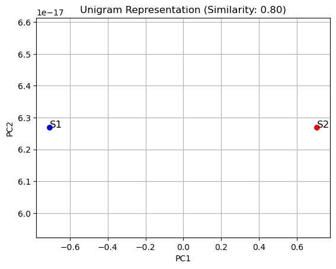
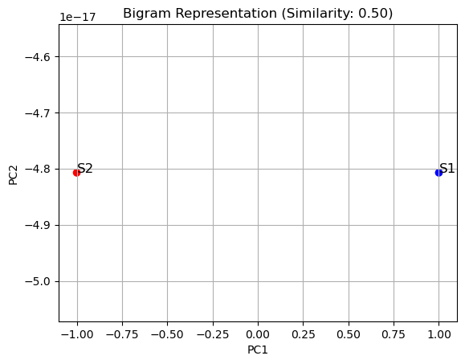
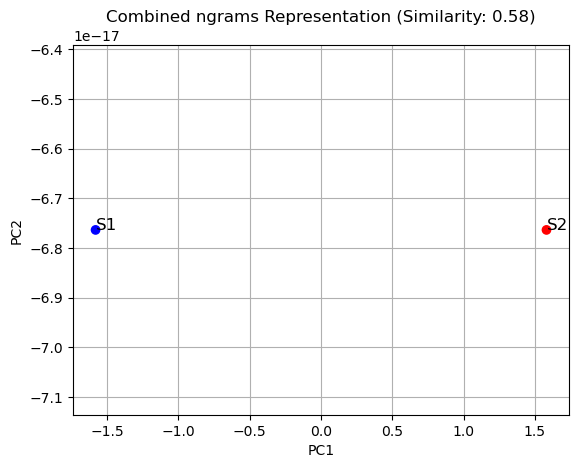
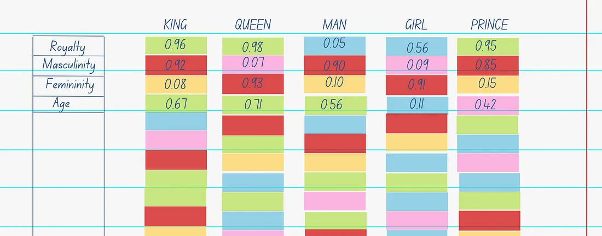
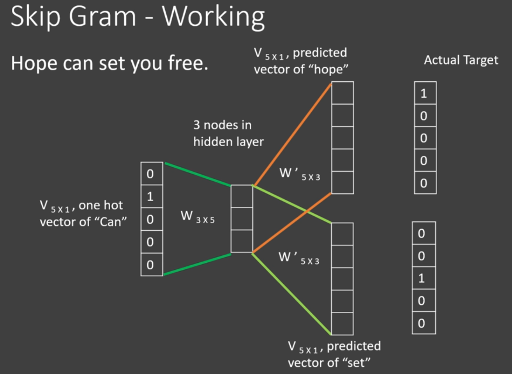
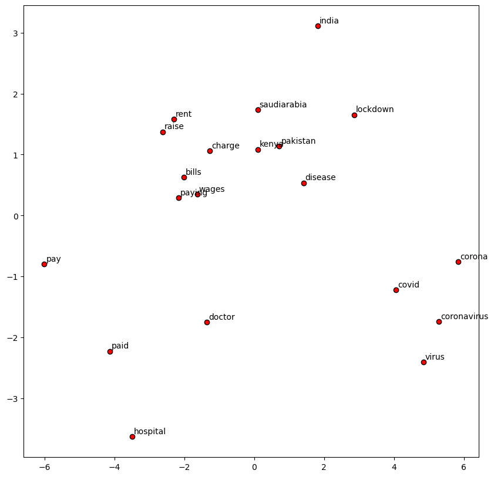
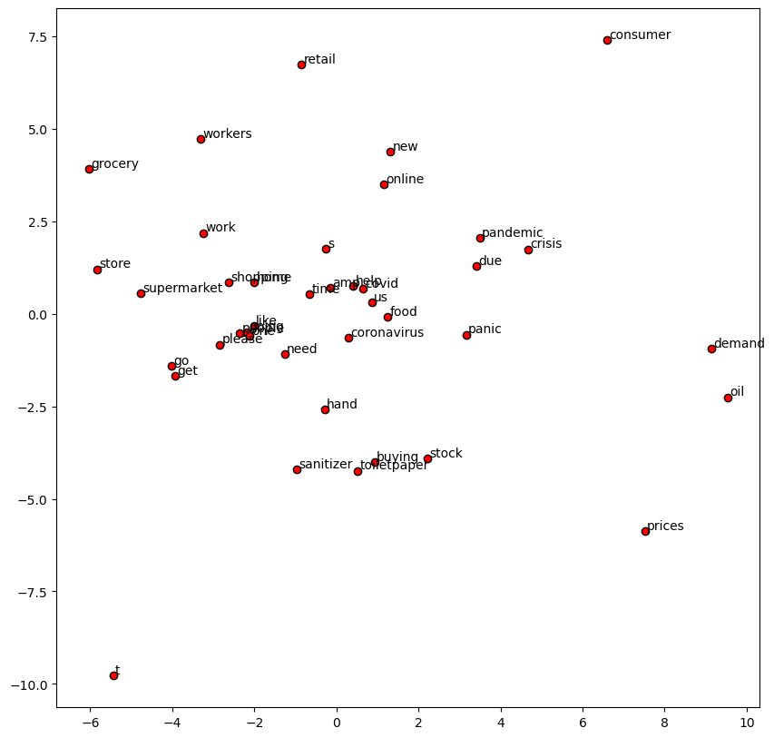

# remove html tags
import re
def remove_html(data):
p = re.compile(r'<.*?>')
return p.sub(r'', data)NLP
Natural language processing (NLP) is a subfield of computer science and artificial intelligence (AI) that uses machine learning to enable computers to understand and communicate with human language.

Why it is needed?
Natural Language Processing (NLP) is essential because it bridges the gap between human communication and machine understanding, enabling computers to process and analyze human language effectively. Here are the key reasons why NLP is needed, along with examples:
1. Understanding Human Language
Computers inherently do not understand human languages, which are complex, context-dependent, and full of nuances like sarcasm, idioms, and dialects. NLP enables machines to interpret and generate human language for meaningful interaction.
e.g., Virtual assistants like Alexa and Siri use NLP to interpret spoken commands and provide relevant responses.
2. Automating Repetitive Tasks
NLP automates tasks such as data entry, document classification, and summarization, saving time and reducing errors.
e.g., Customer service chatbots handle routine queries, freeing human agents for complex issues.
3. Analyzing Unstructured Data
A significant portion of data is unstructured (e.g., social media posts, reviews). NLP extracts insights from this data for decision-making.
e.g., Sentiment analysis helps businesses understand customer opinions from reviews or tweets.
4. Enhancing Productivity
NLP-powered tools streamline workflows by automating tasks like email sorting, invoice processing, or extracting key information from documents.
e.g., Accounting systems use NLP to populate databases from invoices automatically.
5. Enabling Accessibility
NLP makes technology accessible to people with disabilities by supporting voice commands and text-to-speech systems.
e.g., Screen readers for visually impaired users leverage NLP for better comprehension.
6. Improving Communication Across Languages
NLP facilitates real-time language translation, breaking down communication barriers globally.
e.g., Google Translate uses NLP to translate text while preserving meaning and context.
7. Driving Innovation in Specialized Fields
NLP enables advancements in fields like healthcare (analyzing medical records) or autonomous systems (interpreting commands).
e.g., Clinical applications use NLP to summarize patient records efficiently.
8. Knowledge Graph and QA systems
A knowledge graph (KG) is a structured network of entities (nodes) and their relationships (edges) that enables machines to understand context and meaning, making it a critical component in modern question-answering (QA) systems.
e.g. When asked, “Where was the painter of the Mona Lisa born?”, the KG links “Mona Lisa” → “painted by” → “Leonardo da Vinci” → “born in” → “Italy” to derive the answer

For example, a search for the film director James Cameron reveals information such as his date of birth, height, movies and TV shows he directed, previous romantic partners, TED Talks he gave
9. Text parsing
Text parsing, also known as syntactic analysis, is the process of analyzing text to understand its structure and meaning based on grammatical rules, separating it into smaller components for further processing.

Approaches used for NLP
1. Heuristic approach
Heuristics are mental shortcuts that allow people to solve problems and make judgments quickly and efficiently.
e.g., use of Regular expressions, wordnet, open mind common sense.
2. ML approach
Based on data. We convert the text into numbers and then apply algorithms.
e.g., Naive bayes, SVM, Logistic regression, LDA, Hidden markov models
3. Deep Learning Approach
In ML, sequential information is lost when text converted into numbers. In DL, the sequential information is preserved and also no feature generation is needed in DL unlike ML.
e.g., RNN, LSTM, GRU, Transformers
Challanges in NLP
1. Ambiguity
So much meaning of a single word or sentence is easy for us but not for machines.
e.g., I saw the boy on the bench with my binoculars.
2. Contextual word
Different meaning of the word based on the context.
e.g., I ran to the store because we ran out of the supplies.
3. Colloquialisms and Slangs
pulling leg meaning is different in our context but not for machines. Colloquialisms are a word or phrase that is used in conversation but not in formal speech or writing
4. Synonyms
5. Tonal difference and irony
6. Speeling errors
7. Creativity
e.g., Poems, dialogs, scripts
8. So much languages/ diversity
NLP Pipeline
Steps followed to build an end to end NLP software. It consists of following steps:
Data acquisition
Text Preparation:
- Text cleanup
(like spelling mistakes or emoji removing etc.), - Basic preprocessing
(removing punctuations, stopwords and tokenization etc.) - Advance preprocessing
(chunking, Parts-of-speech or POS tagging, co-reference resolution etc.)
- Text cleanup
Feature Engineering:
Converting words into numbers.
e.g., TF-IDF, Bag-of-words, word2vecModelling
- Model building
- evaluation
Deployment
- Deployment
- Monitoring
- Model update
This pipeline is mainly for ML, not for DL. Also this is not universal, e.g., this pipeline is good for sentiment analysis or text summarization but not chatbot.
Also, this is non-linear, i.e., we go back n forth continously depending on the results.
---
title: "1. Data Acquisition"
---
%%{init: {"flowchart": {"htmlLabels": true}}}%%
flowchart LR
A{"<b>Data Acquisition</b>"} --> B("Available") & C("Other Sources") & D("No where")
subgraph Available[" "]
B --> E["Already available in csv"] & F["In the data warehouse, \nneed a data engineer to retrieve the data"] & G["Less Data"]
G --> H["Data \naugmentation"]
H --> HA["Replacing some words with Synonyms"] & HB["Bigram flip | e.g., [king, man] to [man, king]"] & HC["Back-translate \n| Used to rearrange text \n| Converting into another lang & \nthen converting back"] & HD["Adding Noise"]
end
style A color:#000000, fill:#FFF9C4, stroke:#000000
subgraph OtherSources[" "]
C --> CA["<p align='left'>1. Public Dataset <br> 2. Web Scraping <br> 3. APIs <br> 4. PDF <br> 5. Image <br> 6. Audio"]
end
---
title: 2. Text preparation
---
%%{init: {"flowchart": {"htmlLabels": true}}}%%
flowchart LR
A{"<b>Text Preparation</b>"} --> B(Cleaning) & C(Basic preprocessing) & D(Advance Preprocessing)
subgraph Basic_preprocessing[" "]
C --> CA[Must] & CC["Optional \n|Based on application"]
CA --> CAA["Tokenization \n| Sentence or Word Tokenization"]
CC --> CCA["<p align='left'>1. StopWords removal \n2. Word Stemming \n3. Removing Digits & punctuation \n4. Lower casing \n5. Language Detection"]
end
subgraph Advance_preprocessing[" "]
D --> DA["<p align='left'>1. POS tagging\n2. Parsing\n3. Corefence resolution"]
end
style A color:#000000, fill:#FFF9C4, stroke:#000000flowchart TB
A{"<b>modeling</b>"} --> B["Heuristic approach \n (if less data)"] & C["ML Models\n (if thik-thak data)"] & D["DL\n (if much data)"] & E["Cloud API \n (if andha paisa)"]
style A color:#000000, fill:#FFF9C4, stroke:#000000data = "<html><head>Krishna.. <a href='google.com'> yes"
remove_html(data)'Krishna.. yes'Why remove punctuations?
Punctuation removal simplifies text data, streamlining the analysis by reducing the complexity and variability within the data. Also punctuation does’t have exact meaning.
e.g., hi! and hi will be treated differently and will increase complexity.
import string
string.punctuation'!"#$%&\'()*+,-./:;<=>?@[\\]^_`{|}~'def remove_punc(text):
for char in string.punctuation:
text = text.replace(char, '')
return text
text = r"""Removing stopwords is a common text-processing task. The words (like "is," "the," "at," etc.) usually don't contribute to the meaning"""
remove_punc(text)import time
start = time.time()
remove_punc(text)
time1 = time.time() - start
print(time1)0.0002079010009765625# OR
import string
def again_punc_remove(text):
return text.translate(str.maketrans('', '', string.punctuation))import time
start = time.time()
again_punc_remove(text)
time2 = time.time() - start
print(time2)0.00016546249389648438Spell correction
from textblob import TextBlobincorrect = "wjo iss thiis? worng speeling "TextBlob(incorrect).correct().string'who iss this? wrong spelling 'Stop words
from nltk.corpus import stopwords
import nltkimport emojistopwords.words('english')['a',
'about',
'above',
'after',
'again',
'against',
'ain',
'all',
'am',
'an',
'and',
'any',
'are',
'aren',
"aren't",
'as',
'at',
'be',
'because',
'been',
'before',
'being',
'below',
'between',
'both',
'but',
'by',
'can',
'couldn',
"couldn't",
'd',
'did',
'didn',
"didn't",
'do',
'does',
'doesn',
"doesn't",
'doing',
'don',
"don't",
'down',
'during',
'each',
'few',
'for',
'from',
'further',
'had',
'hadn',
"hadn't",
'has',
'hasn',
"hasn't",
'have',
'haven',
"haven't",
'having',
'he',
"he'd",
"he'll",
'her',
'here',
'hers',
'herself',
"he's",
'him',
'himself',
'his',
'how',
'i',
"i'd",
'if',
"i'll",
"i'm",
'in',
'into',
'is',
'isn',
"isn't",
'it',
"it'd",
"it'll",
"it's",
'its',
'itself',
"i've",
'just',
'll',
'm',
'ma',
'me',
'mightn',
"mightn't",
'more',
'most',
'mustn',
"mustn't",
'my',
'myself',
'needn',
"needn't",
'no',
'nor',
'not',
'now',
'o',
'of',
'off',
'on',
'once',
'only',
'or',
'other',
'our',
'ours',
'ourselves',
'out',
'over',
'own',
're',
's',
'same',
'shan',
"shan't",
'she',
"she'd",
"she'll",
"she's",
'should',
'shouldn',
"shouldn't",
"should've",
'so',
'some',
'such',
't',
'than',
'that',
"that'll",
'the',
'their',
'theirs',
'them',
'themselves',
'then',
'there',
'these',
'they',
"they'd",
"they'll",
"they're",
"they've",
'this',
'those',
'through',
'to',
'too',
'under',
'until',
'up',
've',
'very',
'was',
'wasn',
"wasn't",
'we',
"we'd",
"we'll",
"we're",
'were',
'weren',
"weren't",
"we've",
'what',
'when',
'where',
'which',
'while',
'who',
'whom',
'why',
'will',
'with',
'won',
"won't",
'wouldn',
"wouldn't",
'y',
'you',
"you'd",
"you'll",
'your',
"you're",
'yours',
'yourself',
'yourselves',
"you've"]import emoji
print(emoji.demojize('''Python is 😀😃😄😁😆'''))Python is :grinning_face::grinning_face_with_big_eyes::grinning_face_with_smiling_eyes::beaming_face_with_smiling_eyes::grinning_squinting_face:from nltk import word_tokenize, sent_tokenize
import nltksent1 = "My email naman@samatrix.io, sent me there. Thank you."
print(word_tokenize(sent1))
print(sent_tokenize(sent1))['My', 'email', 'naman', '@', 'samatrix.io', ',', 'sent', 'me', 'there', '.', 'Thank', 'you', '.']
['My email naman@samatrix.io, sent me there.', 'Thank you.']sent2 = "ohh! ride for 5km is $20.1"
print(word_tokenize(sent2))
print(sent_tokenize(sent2))['ohh', '!', 'ride', 'for', '5km', 'is', '$', '20.1']
['ohh!', 'ride for 5km is $20.1']import spacy
nlp = spacy.load("en_core_web_trf")
nlp2 = spacy.load("en_core_web_lg")list(nlp(sent1))[My, email, naman@samatrix.io, ,, sent, me, there, ., Thank, you, .]list(nlp(sent2))[ohh, !, ride, for, 5, km, is, $, 20.1]Stemming
Used to extract root form from word.
NLTK has two stemmer, Porter stemmer for english and Snowball stemmer for other language.
from nltk.stem.porter import PorterStemmerps = PorterStemmer()
def stem_word(text):
return " ".join([ps.stem(word) for word in text.split()])sample1 = "walk walks walking walked ferrous ferrum ferric"
stem_word(sample1)'walk walk walk walk ferrou ferrum ferric'sample2 = "All faith he had had had had no effect on an outcome of his life."
stem_word(sample2)'all faith he had had had had no effect on an outcom of hi life.'sample3 = "The man the professor the student has knows studies Rome.."
stem_word(sample3)'the man the professor the student ha know studi rome..'Lemmitization
But stemming can not handle other than english, like ferrum is the root word and not ferrous but can’t handle by stemming. So, for these cases, we use Lemmitization which is little slow but can handle other language words too.
In cases where we want to show output to user, we use lemmitization, and where we don’t need to show output to user, we use stemming.
so, Lemmitization extracts proper root form from words.
| ’ ’ | Stemming | Lemmitization |
|---|---|---|
| Type | Based on algorithms | Search in wordnet data. |
| Speed | fast | slow |
| Goal | Simplify and standardize words | Reduce words to their root form |
| Method | Remove common suffixes from the end of words | Consider word meaning and context |
| Output | Word stem that may not be meaningful | Normalized word form that can be found in a dictionary |
WordNet is a large lexical database of English, developed by Princeton University. It’s not a traditional dataset, but rather a linguistic resource that groups words into sets of cognitive synonyms (called synsets), each expressing a distinct concept.
Key characteristics of WordNet:
- Semantic Relationships: It captures relationships between words
- Hierarchical Structure: Words are organized in a semantic network
- Multiple Meanings: It accounts for different senses of words
- Linguistic Information: Provides definitions, examples, and semantic connections
Main components:
Synsets: Groups of synonymous words/concepts
Semantic Relations:
- Hypernyms: More general words (e.g., “animal” is a hypernym of “dog”)
- Hyponyms: More specific words (e.g., “retriever” is a hyponym of “dog”)
- Meronyms: Part-whole relationships
- Antonyms: Opposite meanings
Use cases:
Natural Language Processing, Semantic analysis, Machine translation, Information retrieval, Sentiment analysis, Text classification
from nltk.corpus import wordnet as wnimport nltk
from nltk.corpus import wordnet as wn
def print_wordnet_details(word):
"""
Comprehensively print WordNet details for a given word
Args:
word (str): Word to explore in WordNet
"""
# Get all synsets for the word
synsets = wn.synsets(word)
print(f"===== WordNet Details for '{word}' =====")
print(f"Total number of synsets: {len(synsets)}")
for i, synset in enumerate(synsets, 1):
print(f"\n--- Synset {i}: {synset.name()} ---")
# Basic Information
print(f"Lemmas: {[lemma.name() for lemma in synset.lemmas()]}")
print(f"Definition: {synset.definition()}")
print(f"Part of Speech: {synset.pos()}")
# Semantic Relationships
print("\n Semantic Relationships:")
# Hypernyms (more general terms)
hypernyms = synset.hypernyms()
if hypernyms:
print(" Hypernyms:")
for hyp in hypernyms:
print(f" - {hyp.name()}: {hyp.definition()}")
# Hyponyms (more specific terms)
hyponyms = synset.hyponyms()
if hyponyms:
print(" Hyponyms:")
for hypo in hyponyms[:5]: # Limit to first 5
print(f" - {hypo.name()}: {hypo.definition()}")
# Antonyms
antonyms = []
for lemma in synset.lemmas():
if lemma.antonyms():
antonyms.extend([ant.name() for ant in lemma.antonyms()])
if antonyms:
print(" Antonyms:")
for ant in antonyms:
print(f" - {ant}")
# Examples
examples = synset.examples()
if examples:
print("\n Examples:")
for example in examples:
print(f" - {example}")
# Examples to demonstrate
words_to_explore = ['dog','beautiful']
# Print details for each word
for word in words_to_explore:
print_wordnet_details(word)
print("\n" + "="*50 + "\n")===== WordNet Details for 'dog' =====
Total number of synsets: 8
--- Synset 1: dog.n.01 ---
Lemmas: ['dog', 'domestic_dog', 'Canis_familiaris']
Definition: a member of the genus Canis (probably descended from the common wolf) that has been domesticated by man since prehistoric times; occurs in many breeds
Part of Speech: n
Semantic Relationships:
Hypernyms:
- domestic_animal.n.01: any of various animals that have been tamed and made fit for a human environment
- canine.n.02: any of various fissiped mammals with nonretractile claws and typically long muzzles
Hyponyms:
- cur.n.01: an inferior dog or one of mixed breed
- pug.n.01: small compact smooth-coated breed of Asiatic origin having a tightly curled tail and broad flat wrinkled muzzle
- dalmatian.n.02: a large breed having a smooth white coat with black or brown spots; originated in Dalmatia
- pooch.n.01: informal terms for dogs
- lapdog.n.01: a dog small and tame enough to be held in the lap
Examples:
- the dog barked all night
--- Synset 2: frump.n.01 ---
Lemmas: ['frump', 'dog']
Definition: a dull unattractive unpleasant girl or woman
Part of Speech: n
Semantic Relationships:
Hypernyms:
- unpleasant_woman.n.01: a woman who is an unpleasant person
Examples:
- she got a reputation as a frump
- she's a real dog
--- Synset 3: dog.n.03 ---
Lemmas: ['dog']
Definition: informal term for a man
Part of Speech: n
Semantic Relationships:
Hypernyms:
- chap.n.01: a boy or man
Examples:
- you lucky dog
--- Synset 4: cad.n.01 ---
Lemmas: ['cad', 'bounder', 'blackguard', 'dog', 'hound', 'heel']
Definition: someone who is morally reprehensible
Part of Speech: n
Semantic Relationships:
Hypernyms:
- villain.n.01: a wicked or evil person; someone who does evil deliberately
Hyponyms:
- perisher.n.01: bounder
Examples:
- you dirty dog
--- Synset 5: frank.n.02 ---
Lemmas: ['frank', 'frankfurter', 'hotdog', 'hot_dog', 'dog', 'wiener', 'wienerwurst', 'weenie']
Definition: a smooth-textured sausage of minced beef or pork usually smoked; often served on a bread roll
Part of Speech: n
Semantic Relationships:
Hypernyms:
- sausage.n.01: highly seasoned minced meat stuffed in casings
Hyponyms:
- vienna_sausage.n.01: short slender frankfurter usually with ends cut off
--- Synset 6: pawl.n.01 ---
Lemmas: ['pawl', 'detent', 'click', 'dog']
Definition: a hinged catch that fits into a notch of a ratchet to move a wheel forward or prevent it from moving backward
Part of Speech: n
Semantic Relationships:
Hypernyms:
- catch.n.06: a restraint that checks the motion of something
--- Synset 7: andiron.n.01 ---
Lemmas: ['andiron', 'firedog', 'dog', 'dog-iron']
Definition: metal supports for logs in a fireplace
Part of Speech: n
Semantic Relationships:
Hypernyms:
- support.n.10: any device that bears the weight of another thing
Examples:
- the andirons were too hot to touch
--- Synset 8: chase.v.01 ---
Lemmas: ['chase', 'chase_after', 'trail', 'tail', 'tag', 'give_chase', 'dog', 'go_after', 'track']
Definition: go after with the intent to catch
Part of Speech: v
Semantic Relationships:
Hypernyms:
- pursue.v.02: follow in or as if in pursuit
Hyponyms:
- run_down.v.07: pursue until captured
- quest.v.02: search the trail of (game)
- tree.v.03: chase an animal up a tree
- hound.v.01: pursue or chase relentlessly
Examples:
- The policeman chased the mugger down the alley
- the dog chased the rabbit
==================================================
===== WordNet Details for 'beautiful' =====
Total number of synsets: 2
--- Synset 1: beautiful.a.01 ---
Lemmas: ['beautiful']
Definition: delighting the senses or exciting intellectual or emotional admiration
Part of Speech: a
Semantic Relationships:
Antonyms:
- ugly
Examples:
- a beautiful child
- beautiful country
- a beautiful painting
- a beautiful theory
- a beautiful party
--- Synset 2: beautiful.s.02 ---
Lemmas: ['beautiful']
Definition: (of weather) highly enjoyable
Part of Speech: s
Semantic Relationships:
Examples:
- what a beautiful day
==================================================
import nltk
from nltk import word_tokenize, sent_tokenize
from nltk.stem import WordNetLemmatizer, PorterStemmer
lemmatizer = WordNetLemmatizer()
stemmer = PorterStemmer()sentence = "The striped bats are hanging on their feet for best"
words = nltk.word_tokenize(sentence)
stemmed_words = [stemmer.stem(word) for word in words]
# function to get parts of speech
def get_wordnet_pos(word):
tag = nltk.pos_tag([word])[0][1][0].upper()from nltk.stem import WordNetLemmatizer as wnl
print(wnl().lemmatize('dogs'))
print(wnl().lemmatize('churches'))
print(wnl().lemmatize('ships'))
print(wnl().lemmatize('aardwolves'))dog
church
ship
aardwolfsentence2 = "John's big idea isn't all that bad. He sleeps the most. loved love loving"
punctuations = [i for i in "?.!:,"]
sentence_words = word_tokenize(sentence2)
for word in sentence_words:
if word in punctuations:
sentence_words.remove(word)
print(sentence_words)
print(f"{'Word':20} {'Lemma':20}")
for word in sentence_words:
print(f"{word:20} {lemmatizer.lemmatize(word, pos='v'):20}")['John', "'s", 'big', 'idea', 'is', "n't", 'all', 'that', 'bad', 'He', 'sleeps', 'the', 'most', 'loved', 'love', 'loving']
Word Lemma
John John
's 's
big big
idea idea
is be
n't n't
all all
that that
bad bad
He He
sleeps sleep
the the
most most
loved love
love love
loving love def get_wordnet_pos(word):
tag = nltk.pos_tag(word_tokenize(word), tagset='universal')
return tag
get_wordnet_pos(sentence2)[('John', 'NOUN'),
("'s", 'PRT'),
('big', 'ADJ'),
('idea', 'NOUN'),
('is', 'VERB'),
("n't", 'ADV'),
('all', 'DET'),
('that', 'DET'),
('bad', 'ADJ'),
('.', '.'),
('He', 'PRON'),
('sleeps', 'VERB'),
('the', 'DET'),
('most', 'ADV'),
('.', '.'),
('loved', 'VERB'),
('love', 'ADP'),
('loving', 'VERB')]Que. What is feature extraction from text?
Ans. Converting text into numbers. It is also called text representation / text vectorization.
1. Corpus
A corpus (plural: corpora) is a large collection of texts (documents) used for linguistic analysis or NLP tasks.
Example:
News Corpus: A collection of news articles from various publishers.
Medical Corpus: A set of medical research papers.
Wikipedia Corpus: A dataset containing all Wikipedia pages.Example Corpus (Simple Set of Documents)
Document 1: “Apple is a popular fruit.”
Document 2: “Apple Inc. is a technology company.”
Document 3: “Bananas and apples are fruits.”
2. Vocabulary
The vocabulary of a corpus is the set of unique words it contains.
Example: For the three documents above, the vocabulary is:
{“Apple”, “is”, “a”, “popular”, “fruit”, “Inc.”, “technology”, “company”, “Bananas”, “and”, “apples”, “are”, “fruits”}Vocabulary does not store duplicates—only unique words from the corpus.
3. Word
A word is an individual unit in the vocabulary.
Example: “Apple” appears in two different meanings (fruit vs. company).
“is” is a common word appearing multiple times.
4. Document
A document is a single text or a part of a corpus. It can be a sentence, paragraph, or an entire article.
Example: Single Document: “Apple is a popular fruit.”
Multiple Documents in a Corpus:
[“Apple is a popular fruit.”, “Apple Inc. is a technology company.”, “Bananas and apples are fruits.”]
OHE ( One hot encoding)
Fayde - 1. Samajh me aati hai
Nuksan - 1. Sparsity (so many zeroes) 2. as the sentence length changes, input size changes, and ML algos can’t work with varying inputs. 3. OOV(out of vocabulary) problem - Word other than words defined inside vocab can not be vectorized. 4. No semantic meaning - When we convert text into numbers, our core idea is to convert in that way so that their semantic meaning also visible in the numbers, e.g., Shoes = 1, run = 0.8, fish = 3
because shoes and run are somewhere similar than fish. But One hot encoding can not retain this relation, it will treat each word equal.
e.g., male = [0,1,0], female = [0,0,1], book = [1,0,0]
Bag of Words (BoW) – NLP Concept
📖 What is Bag of Words?
Bag of Words (BoW) is a text representation technique used in Natural Language Processing (NLP). It converts text into numerical form by counting word occurrences, while ignoring grammar and word order.
🔹 How Bag of Words Works:
- Create a Vocabulary – Identify all unique words in the corpus.
- Count Word Occurrences – Count how many times each word appears in each document.
- Convert to a Vector – Represent each document mas a numerical vector.
📝 Example of Bag of Words
Corpus (Collection of Documents)
- Document 1: “Apple is a fruit”
- Document 2: “I like Apple and Banana”
- Document 3: “Banana is a yellow fruit”
Step 1: Create Vocabulary
[“Apple”, “is”, “a”, “fruit”, “I”, “like”, “and”, “Banana”, “yellow”]
Step 2: Word Count in Each Document
| Word | Doc 1 | Doc 2 | Doc 3 |
|---|---|---|---|
| Apple | 1 | 1 | 0 |
| is | 1 | 0 | 1 |
| a | 1 | 0 | 1 |
| fruit | 1 | 0 | 1 |
| I | 0 | 1 | 0 |
| like | 0 | 1 | 0 |
| and | 0 | 1 | 0 |
| Banana | 0 | 1 | 1 |
| yellow | 0 | 0 | 1 |
Step 3: Convert to Vector Representation
Each document is now represented as a vector based on word frequency.
- Doc 1 → [1, 1, 1, 1, 0, 0, 0, 0, 0]
- Doc 2 → [1, 0, 0, 0, 1, 1, 1, 1, 0]
- Doc 3 → [0, 1, 1, 1, 0, 0, 0, 1, 1]
✅ Advantages of Bag of Words
- Simple & Effective – Works well for text classification tasks.
- Useful for Machine Learning – Applied in spam detection, sentiment analysis, and information retrieval.
- OOV problem solved
- Fixed Input size
❌ Limitations of Bag of Words
- Ignores word order (e.g., “I love NLP” and “NLP love I” are treated the same).
- Sparse representation (creates large vectors for big vocabularies).
- Does not capture meaning (e.g., “good” and “not good” may be treated similarly).
- not treating out of vocabulary words it don’t throw error for OOV but still not know how to deal with it.
🔥 Alternative Approaches
- TF-IDF (Term Frequency-Inverse Document Frequency) – Weighs words based on importance.
- Word Embeddings (Word2Vec, GloVe, BERT) – Captures semantic meaning.
from sklearn.feature_extraction.text import CountVectorizer
# Sample corpus
corpus = ["Apple is a Apple fruit", "I like an Apple of and Banana", "The Banana is a yellow fruit", "an an an"]
# Initialize CountVectorizer
vectorizer = CountVectorizer()
# Transform the corpus into BoW representation
X = vectorizer.fit_transform(corpus)
# Get feature names (vocabulary)
vocab = vectorizer.get_feature_names_out()
print("Vocabulary count: ", vectorizer.vocabulary_)
# sorting
vals = sorted(vectorizer.vocabulary_.values())
new_dict = dict()
for i in vals:
for j in vectorizer.vocabulary_.keys():
if vectorizer.vocabulary_[j] == i:
new_dict[j] = i
break
print("sorted: ",new_dict)
# Convert BoW matrix to array and display
print("\nBag of Words Matrix:\n", X.toarray())Vocabulary count: {'apple': 2, 'is': 5, 'fruit': 4, 'like': 6, 'an': 0, 'of': 7, 'and': 1, 'banana': 3, 'the': 8, 'yellow': 9}
sorted: {'an': 0, 'and': 1, 'apple': 2, 'banana': 3, 'fruit': 4, 'is': 5, 'like': 6, 'of': 7, 'the': 8, 'yellow': 9}
Bag of Words Matrix:
[[0 0 2 0 1 1 0 0 0 0]
[1 1 1 1 0 0 1 1 0 0]
[0 0 0 1 1 1 0 0 1 1]
[3 0 0 0 0 0 0 0 0 0]]vectorizer.transform(["I don't like apple."]).toarray()array([[0, 0, 1, 0, 0, 0,
1, 0, 0, 0]])Stopwords like a are automatically removed.
📚 N-grams and Bag of N-grams
What are N-grams?
An n-gram is a contiguous sequence of n items (usually words or characters) from a given text.
- Unigram (n = 1):
"I love NLP"→["I", "love", "NLP"] - Bigram (n = 2):
"I love NLP"→[("I", "love"), ("love", "NLP")] - Trigram (n = 3):
"I love NLP"→[("I", "love", "NLP")]
What is a Bag of N-grams?
Just like Bag of Words (BoW) counts word frequencies, the Bag of N-grams model counts n-gram frequencies.
🧾 Example
Given two sentences:
S1: “I love NLP” S2: “I love deep learning”
Using bigrams:
- From S1:
("I", "love"), ("love", "NLP") - From S2:
("I", "love"), ("love", "deep"), ("deep", "learning")
📊 Bag of Bigrams:
alcctnxrntqcxpkwlraqqktfyypzjmsfbuowcsgfgyhcdgpwutkzkmmubngqivvujjmurxwjjnnfgcttwoti
🔹 Why Use N-grams?
✅ Capture local context (e.g., “deep learning”, “New York”)
✅ Better than single words in many NLP tasks
⚠️ Larger n leads to more features → sparse vectors → higher dimensionality
🧪 Code Example (Python)
from sklearn.feature_extraction.text import CountVectorizer
# Sample text corpus
corpus = [
"I love NLP",
"I love deep learning"
]
# Create a bigram vectorizer
vectorizer = CountVectorizer(ngram_range=(1, 3)) ## combination of (1,1) and (2,2) and (3,3)
X = vectorizer.fit_transform(corpus)
# Get feature names
print("Bigrams:", vectorizer.get_feature_names_out())
print("Vocabulary count: ", vectorizer.vocabulary_)
# Convert to array
print("Frequency Matrix:\n", X.toarray())Bigrams: ['deep' 'deep learning'
'learning' 'love'
'love deep'
'love deep learning'
'love nlp' 'nlp']
Vocabulary count: {'love': 3, 'nlp': 7, 'love nlp': 6, 'deep': 0, 'learning': 2, 'love deep': 4, 'deep learning': 1, 'love deep learning': 5}
Frequency Matrix:
[[0 0 0 1 0 0 1 1]
[1 1 1 1 1 1 0 0]]corpus = [
"This movie is very good",
"This movie is not good"
]
# Create a bigram vectorizer
vectorizer = CountVectorizer(ngram_range=(1, 1)) ## combination of (1,1) and (2,2) and (3,3)
X = vectorizer.fit_transform(corpus)
# Get feature names
print("Bigrams:", vectorizer.get_feature_names_out())
print("Vocabulary count: ", vectorizer.vocabulary_)
# Convert to array
print("Frequency Matrix:\n", X.toarray())Bigrams: ['good' 'is' 'movie' 'not' 'this' 'very']
Vocabulary count: {'this': 4, 'movie': 2, 'is': 1, 'very': 5, 'good': 0, 'not': 3}
Frequency Matrix:
[[1 1 1 0 1 1]
[1 1 1 1 1 0]]Using Unigram,
Vectors are quite similar.
Only difference: very in sentence 1 vs not in sentence 2.
This means cosine distance or Euclidean distance between them is small.
vectorizer = CountVectorizer(ngram_range=(2, 2))
X = vectorizer.fit_transform(corpus)
print("Bigrams:", vectorizer.get_feature_names_out())
print("Vocabulary:", vectorizer.vocabulary_)
print("Frequency Matrix:\n", X.toarray())Bigrams: ['is not' 'is very' 'movie is' 'not good' 'this movie' 'very good']
Vocabulary: {'this movie': 4, 'movie is': 2, 'is very': 1, 'very good': 5, 'is not': 0, 'not good': 3}
Frequency Matrix:
[[0 1 1 0 1 1]
[1 0 1 1 1 0]]Using Bigram, - Now the vectors differ more significantly.
Bigram is very and very good only exist in sentence 1.
Bigram is not and not good only exist in sentence 2.
Higher discriminative power than unigrams.
vectorizer = CountVectorizer(ngram_range=(3, 3))
X = vectorizer.fit_transform(corpus)
print("Trigrams:", vectorizer.get_feature_names_out())
print("Vocabulary:", vectorizer.vocabulary_)
print("Frequency Matrix:\n", X.toarray())Trigrams: ['is not good' 'is very good' 'movie is not' 'movie is very' 'this movie is']
Vocabulary: {'this movie is': 4, 'movie is very': 3, 'is very good': 1, 'movie is not': 2, 'is not good': 0}
Frequency Matrix:
[[0 1 0 1 1]
[1 0 1 0 1]]Using Trigrams, - Even sharper contrast than bigrams.
No shared trigrams between the two sentences.
The vectors are now much farther apart.
# Combined N-grams (1, 2, 3)
vectorizer = CountVectorizer(ngram_range=(1, 3))
X = vectorizer.fit_transform(corpus)
print("All N-grams:", vectorizer.get_feature_names_out())
print("Frequency Matrix:\n", X.toarray())All N-grams: ['good' 'is' 'is not' 'is not good' 'is very' 'is very good' 'movie' 'movie is'
'movie is not' 'movie is very' 'not' 'not good' 'this' 'this movie' 'this movie is'
'very' 'very good']
Frequency Matrix:
[[1 1 0 0 1 1 1 1 0 1 0 0 1 1 1 1 1]
[1 1 1 1 0 0 1 1 1 0 1 1 1 1 1 0 0]]This approach mixes all the advantages of different levels of granularity.
from sklearn.feature_extraction.text import CountVectorizer
from sklearn.metrics.pairwise import cosine_similarity
from sklearn.decomposition import PCA
import matplotlib.pyplot as plt
import numpy as np
# Corpus
corpus = [
"This movie is very good",
"This movie is not good"
]
# Function to process n-grams and visualize
def process_and_visualize(ngram_range, title):
# Vectorization
vectorizer = CountVectorizer(ngram_range=ngram_range)
X = vectorizer.fit_transform(corpus).toarray()
# Cosine Similarity
similarity = cosine_similarity(X)[0, 1]
print(f"\n=== {title} ===")
print("Feature Names:", vectorizer.get_feature_names_out())
print("Vectors:\n", X)
print(f"Cosine Similarity: {similarity:.4f}")
# PCA for 2D projection
pca = PCA(n_components=2)
X_pca = pca.fit_transform(X)
# Plot
plt.figure()
plt.title(f"{title} (Similarity: {similarity:.2f})")
plt.scatter(X_pca[:, 0], X_pca[:, 1], c=['blue', 'red'])
for i, txt in enumerate(corpus):
plt.annotate(f"S{i+1}", (X_pca[i, 0], X_pca[i, 1]), fontsize=12)
plt.xlabel("PC1")
plt.ylabel("PC2")
plt.grid(True)
plt.show()
# Run for unigram, bigram, trigram
process_and_visualize((1, 1), "Unigram Representation")
process_and_visualize((2, 2), "Bigram Representation")
process_and_visualize((3, 3), "Trigram Representation")
process_and_visualize((1, 3), "Combined ngrams Representation")
=== Unigram Representation ===
Feature Names: ['good' 'is' 'movie' 'not' 'this' 'very']
Vectors:
[[1 1 1 0 1 1]
[1 1 1 1 1 0]]
Cosine Similarity: 0.8000
=== Bigram Representation ===
Feature Names: ['is not' 'is very' 'movie is' 'not good' 'this movie' 'very good']
Vectors:
[[0 1 1 0 1 1]
[1 0 1 1 1 0]]
Cosine Similarity: 0.5000
=== Trigram Representation ===
Feature Names: ['is not good' 'is very good' 'movie is not' 'movie is very' 'this movie is']
Vectors:
[[0 1 0 1 1]
[1 0 1 0 1]]
Cosine Similarity: 0.3333
=== Combined ngrams Representation ===
Feature Names: ['good' 'is' 'is not' 'is not good' 'is very' 'is very good' 'movie' 'movie is'
'movie is not' 'movie is very' 'not' 'not good' 'this' 'this movie' 'this movie is'
'very' 'very good']
Vectors:
[[1 1 0 0 1 1 1 1 0 1 0 0 1 1 1 1 1]
[1 1 1 1 0 0 1 1 1 0 1 1 1 1 1 0 0]]
Cosine Similarity: 0.5833
✅ Advantages
| Benefit | Explanation |
|---|---|
| 📏 Simple and Intuitive | Easy to understand and implement |
| 🧠 Captures Local Context | Bigrams/trigrams can model short phrases and common word combinations |
| 🎯 Improves Model Performance | Often boosts accuracy over just unigrams in traditional models |
| 📊 Great for Statistical Models | Works well with Naive Bayes, SVM, Logistic Regression |
| 🔍 Useful for Pattern Detection | Can detect things like “not good”, “very bad”, “New York” |
| ⚡ Fast & Scalable | Easy to vectorize and use in sparse matrix form |
⚠️ Disadvantages
| Drawback | Explanation |
|---|---|
| 🧱 Data Sparsity | Higher n-grams = more combinations = more zeroes in vector space |
| 🧠 No Understanding of Meaning | N-grams are based on surface text, not semantics (e.g., “not good” ≠ “bad”) |
| 📏 Context Window is Fixed | Only captures local context, not long-range dependencies |
| 🧹 Vocabulary Explosion | As n increases, vocab size grows rapidly → more memory usage |
| 🔄 Not Robust to Word Reordering | “dog bites man” ≠ “man bites dog” → N-gram doesn’t generalize well |
| 🚫 Ignores Grammar | Doesn’t consider POS tags, sentence structure, or syntax |
📌 Summary
| N | Use When… |
|---|---|
| 1 | You want a basic BoW model |
| 2 | You want to capture short phrases |
| 3 | Phrases are important, and you can afford sparsity |
| 4+ | Only for large corpora or specific tasks |
Combine unigrams + bigrams (ngram_range=(1, 2)) for a good balance between context and sparsity.
corpus = ['dog bites man', 'man bites dog']
vectorizer = CountVectorizer(ngram_range=(1,1))
X = vectorizer.fit_transform(corpus)
print("All N-grams:", vectorizer.get_feature_names_out())
print("Frequency Matrix:\n", X.toarray())
print("Cosine similarity: ", cosine_similarity(X)[0, 1])All N-grams: ['bites' 'dog' 'man']
Frequency Matrix:
[[1 1 1]
[1 1 1]]
Cosine similarity: 1.0000000000000002corpus = ['dog bites man', 'man bites dog']
vectorizer = CountVectorizer(ngram_range=(2, 2))
X = vectorizer.fit_transform(corpus)
print("All N-grams:", vectorizer.get_feature_names_out())
print("Frequency Matrix:\n", X.toarray())
print("Cosine similarity: ", cosine_similarity(X)[0, 1])All N-grams: ['bites dog' 'bites man' 'dog bites' 'man bites']
Frequency Matrix:
[[0 1 1 0]
[1 0 0 1]]
Cosine similarity: 0.0corpus = ['dog bites man', 'man bites dog']
vectorizer = CountVectorizer(ngram_range=(1,2))
X = vectorizer.fit_transform(corpus)
print("All N-grams:", vectorizer.get_feature_names_out())
print("Frequency Matrix:\n", X.toarray())
print("Cosine similarity: ", cosine_similarity(X)[0, 1])All N-grams: ['bites' 'bites dog' 'bites man' 'dog' 'dog bites' 'man' 'man bites']
Frequency Matrix:
[[1 0 1 1 1 1 0]
[1 1 0 1 0 1 1]]
Cosine similarity: 0.6📊 TF-IDF (Term Frequency–Inverse Document Frequency)
TF-IDF is a popular technique to convert text to numerical features. It helps us weigh how important a word is in a document relative to the entire corpus.
🔹 1. What is TF-IDF?
It combines two metrics:
- TF (Term Frequency): How often a word appears in a document.
- IDF (Inverse Document Frequency): How rare the word is across all documents.
\[ \text{TF-IDF}(t, d) = \text{TF}(t, d) \times \text{IDF}(t) \]
🔹 2. Term Frequency (TF)
\[ \text{TF}(t, d) = \frac{\text{Count of term } t \text{ in } d}{\text{Total terms in } d} \]
🔹 3. Inverse Document Frequency (IDF)
\[ \text{IDF}(t) = \log \left(\frac{N}{1 + \text{df}(t)}\right) \]
Where: - N = Total number of documents - df(t) = Number of documents containing the term t
Smoothing (
+1) avoids division by zero.
🔹 4. Example
Suppose we have 3 documents:
D1: “I love machine learning”
D2: “I love deep learning”
D3: “I love pizza”
- TF(“learning”, D1) = 1/4 = 0.25
- “learning” appears in 2 documents → IDF = log(3 / 2) ≈ 0.176
- TF-IDF = 0.25 × 0.176 ≈ 0.044
Compare with:
- TF(“pizza”, D3) = 1/4 = 0.25
- IDF(“pizza”) = log(3 / 1) ≈ 0.477
- TF-IDF ≈ 0.119
👉 “pizza” is more unique → higher TF-IDF
Advantages
| Benefit | Explanation |
|---|---|
| Filters out common words | Words like “the”, “is” get low scores |
| Highlights uniqueness | Emphasizes words that are rare and relevant |
| Fast and lightweight | Efficient even on large datasets |
| Works well with ML models | Great for SVM, Naive Bayes, Logistic Regression |
Limitations
| Limitation | Explanation |
|---|---|
| No word order | Cannot capture phrases like “not good” |
| Sparse representation | Large vocab = large, sparse matrices |
| No semantic meaning | Can’t tell “excellent” ≠ “good” |
| more dimensions | if vocab is big |
from sklearn.feature_extraction.text import TfidfVectorizer
corpus = [
"I love machine learning deep learning",
"I love deep learning",
"I love pizza"
]
vectorizer = TfidfVectorizer()
X = vectorizer.fit_transform(corpus)
print("Features:", dict(sorted(vectorizer.vocabulary_.items(), key=lambda x: x[1])))
print("TF-IDF Matrix:\n", X.toarray())Features: {'deep': 0, 'learning': 1, 'love': 2, 'machine': 3, 'pizza': 4}
TF-IDF Matrix:
[[0.36930805 0.73861611 0.28680065 0.48559571 0. ]
[0.61980538 0.61980538 0.48133417 0. 0. ]
[0. 0. 0.50854232 0. 0.861037 ]]# for I love machine learning deep learning
import numpy as np
def idff(n, df):
return np.log((n+1)/(df+1))+1
tfidfs = [1/6*idff(3,2),2/6*idff(3,2), 1/6*idff(3,3), 1/6*idff(3,1),0]
print("Before Normalization:", np.round(tfidfs, 4))
l2norm = np.sqrt(np.sum(np.power(np.array(tfidfs), 2)))
print("L2 norm:", l2norm)
print("After normalization:", tfidfs/l2norm)Before Normalization: [0.2146 0.4292 0.1667 0.2822 0. ]
L2 norm: 0.5811237431239642
After normalization: [0.36930805 0.73861611 0.28680065 0.48559571 0. ]# for I love deep learning
tfidfs = [.25*idff(3,2), 0.25*idff(3,2), 0.25*idff(3,3),0, 0]
print("Before Normalization:", np.round(tfidfs, 4))
l2norm = np.sqrt(np.sum(np.power(np.array(tfidfs), 2)))
print("L2 norm:", l2norm)
print("After normalization:", tfidfs/l2norm)Before Normalization: [0.3219 0.3219 0.25 0. 0. ]
L2 norm: 0.5193896802634936
After normalization: [0.61980538 0.61980538 0.48133417 0. 0. ]# for I love pizza
tfidfs = [0, 0, 0.33*idff(3,3),0, .33*idff(3,1)]
print("Before Normalization:", np.round(tfidfs, 4))
l2norm = np.sqrt(np.sum(np.power(np.array(tfidfs), 2)))
print("L2 norm:", l2norm)
print("After normalization:", tfidfs/l2norm)Before Normalization: [0. 0. 0.33 0. 0.5587]
L2 norm: 0.6489135451981629
After normalization: [0. 0. 0.50854232 0. 0.861037 ]print(vectorizer.idf_)
print(vectorizer.get_feature_names_out())
print(np.round([idff(3,2), idff(3, 2), idff(3, 3), idff(3,1), idff(3,1)], 8))[1.28768207 1.28768207 1. 1.69314718 1.69314718]
['deep' 'learning' 'love' 'machine' 'pizza']
[1.28768207 1.28768207 1. 1.69314718 1.69314718]🤔 Why Does TF-IDF Use log in IDF but Not in TF?
🔹 What is TF and IDF?
✅ TF (Term Frequency)
\[ \text{TF}(t, d) = \frac{\text{Count of term } t \text{ in document } d}{\text{Total number of terms in } d} \]
- Local to the document
- Already a small number (e.g., 0.25 if the word occurs once in a 4-word document)
- No need to apply log
✅ IDF (Inverse Document Frequency)
\[ \text{IDF}(t) = \log \left( \frac{1 + N}{1 + \text{df}(t)} \right) + 1 \]
Where: - N = Total number of documents - df(t) = Number of documents containing the term t
- Helps penalize common words like “the”, “and”
- Logarithm is used to compress large variations
🔍 Example: What Happens Without log?
Assume N = 10,000 documents:
| Term | Document Frequency (df) |
Raw IDF | Log IDF |
|---|---|---|---|
| “the” | 9999 | 10000 / 9999 ≈ 1.0001 | log(10000 / 9999) ≈ 0.0001 |
| “AI” | 100 | 10000 / 100 = 100 | log(10000 / 100) = 2 |
| “chatgpt” | 10 | 10000 / 10 = 1000 | log(10000 / 10) = 3 |
- Without log, “chatgpt” gets 1000× more weight than “AI”
- With log, it’s only 1.5× more — much more stable!
📉 Why Log? The Intuition
TF is already small:
- Values like 0.1 or 0.2 — no risk of explosion
- No need to compress the scale
IDF can explode:
- Without log, rare terms can dominate
- Log compresses large values to keep weights manageable
What Are Word Embeddings in NLP?
Word embeddings are vector representations of words that capture their semantic meaning.
Unlike one-hot encoding (which treats each word as independent), embeddings place words in a continuous vector space where similar words are close together.
🔍 Why Do We Need Them?
| Problem with Traditional Methods | Solution via Embeddings |
|---|---|
| One-hot vectors are sparse | Dense vectors (e.g., 100–300 dims) |
| No semantic relationships | Similar meanings → similar vectors |
| High memory usage | Lower dimensional representation |
💡 Example
One-hot encoding:
[“cat”, “dog”, “apple”]
“cat” = [1, 0, 0]
“dog” = [0, 1, 0]
➡️ All words are equally distant, even if related.
Word Embeddings:
“cat” = [0.20, 0.45, …, 0.11]
“dog” = [0.21, 0.47, …, 0.09]
“apple”= [0.88, 0.11, …, 0.76]
➡️ cosine_similarity(cat, dog) > cosine_similarity(cat, apple)
Word embeddings can be categorized based on how they’re generated and whether they are context-free or contextual.
🔹 1. Static Word Embeddings
- Each word has a single fixed vector, regardless of context.
- Doesn’t capture polysemy (e.g., “bank” as river vs. financial institution)
📦 Popular Models:
| Model | Type | Description |
|---|---|---|
| Word2Vec | Predictive (Neural) | Trains using Skip-Gram or CBOW to predict context |
| GloVe | Count-based (Matrix Factorization) | Uses global word co-occurrence statistics |
| FastText | Predictive with subword info | Like Word2Vec, but considers character n-grams |
| TF-IDF | Statistical (Non-NN) | Not an embedding model per se, but dense |
🔸 Summary:
- 📌 Fast, lightweight
- 📉 No contextual understanding
- 💾 Pretrained vectors available
🔹 2. Contextual Word Embeddings
- Word vectors change depending on the sentence context
- Solves the polysemy problem
📦 Popular Models:
| Model | Architecture | Description |
|---|---|---|
| ELMo | BiLSTM-based | Embeddings from deep bidirectional LSTM |
| BERT | Transformer (masked LM) | Contextualized word vectors using attention |
| RoBERTa, ALBERT, DistilBERT | Transformer variants | Improve or optimize BERT architecture |
| GPT, GPT-2/3/4 | Decoder-only Transformers | More generative, can also extract embeddings |
🔸 Summary:
- ✅ Captures word meaning in context
- 🔍 Powerful for NER, QA, Sentiment Analysis
- 💻 Requires more compute, but state-of-the-art in NLP
✅ Quick Comparison Table
| Feature | Static Embeddings | Contextual Embeddings |
|---|---|---|
| Context-aware | ❌ No | ✅ Yes |
| Vector size | Fixed | Fixed (but varies per model) |
| Training | Shallow NN / Co-occurrence | Deep Transformers |
| Example Models | Word2Vec, GloVe, FastText | BERT, ELMo, GPT |
| Pretrained | ✅ Widely available | ✅ Widely available |
✨ Key Properties
- Semantic similarity: “king” and “queen” are close in vector space
- Vector arithmetic: \[ \text{vec}("king") - \text{vec}("man") + \text{vec}("woman") \approx \text{vec}("queen") \]
- Dimensionality: Typically 100–300 dimensions
- Pretrained embeddings: Can load via
gensim,spacy,transformers, etc.
✅ Advantages
- Captures semantic meaning and relationships
- Improves performance of ML and deep learning models
- Can use pretrained vectors (e.g.,
GloVe,Word2Vec,FastText) - Compact: low dimensional and dense vector and fast compute than sparse methods
⚠️ Limitations
- Static embeddings (like Word2Vec, GloVe) don’t consider context
- E.g., “bank” (river) vs “bank” (money) → same vector
- Need large data to train from scratch
- Contextual embeddings (like BERT) solve this, but are heavier
Google News Word2Vec Model (300-dimensional)
Overview
- Developed by Google using the Word2Vec algorithm.
- Trained on Google News dataset (~100 billion words).
- Each word is represented as a 300-dimensional vector.
📌 Key Characteristics
| Feature | Value |
|---|---|
| Model Type | Word2Vec (Skip-Gram with Negative Sampling) |
| Dimensions | 300 |
| Dataset | Google News (100B words) |
| Vocabulary Size | ~3 million unique words/phrases |
| Format | Binary .bin file (300d vectors) |
| Pretrained? | ✅ Yes |
import gensim.downloader as api
print(api.BASE_DIR)/media/naman/NewVolume/Ubuntu/temp/gensim_datawv = api.load('word2vec-google-news-300')# using a pretrained model
from gensim.models import Word2Vec, KeyedVectorsmodel = KeyedVectors.load_word2vec_format("/media/naman/NewVolume/Ubuntu/temp/gensim_data/word2vec-google-news-300/word2vec-google-news-300.gz", binary=True, limit=500000)model['cricket'].shape(300,)model.most_similar('Soccer')[('soccer', 0.7622618079185486),
('Football', 0.7229189276695251),
('Lacrosse', 0.7092606425285339),
('Youth_Soccer', 0.6637541651725769),
('Volleyball', 0.6585472226142883),
('Basketball', 0.6463674306869507),
('Softball', 0.6419784426689148),
('Baseball', 0.6195278167724609),
('SOCCER', 0.6015186905860901),
('Soccer_Federation', 0.5930034518241882)]model.similarity('football', 'basketball')0.66824675model.similarity('football','rugby')0.56163174model.doesnt_match(['python','chair','algorithm'])'chair'vec = model['king'] - model['man'] + model['women']
model.most_similar(vec)[('king', 0.6478992700576782),
('queen', 0.535493791103363),
('women', 0.5233659148216248),
('kings', 0.5162314772605896),
('queens', 0.4995364248752594),
('princes', 0.46233269572257996),
('monarch', 0.45280295610427856),
('monarchy', 0.4293173849582672),
('crown_prince', 0.42302510142326355),
('concubines', 0.4224807024002075)]vec = model['Hollywood'] - model['USA'] + model['India']
model.most_similar(vec)[('Hollywood', 0.7214100956916809),
('Bollywood', 0.6288692355155945),
('Hindi_cinema', 0.5506490468978882),
('tinseltown', 0.5477021932601929),
('Bhojpuri_films', 0.5466169118881226),
('Kollywood', 0.542259156703949),
('tinsel_town', 0.5404236316680908),
('Hindi_films', 0.5321155786514282),
('Kannada_cinema', 0.5287744402885437),
('Malayalam_cinema', 0.5259954333305359)]sentences = [["i", "love", "nlp"], ["nlp", "is", "fun"]]
model = Word2Vec(sentences, vector_size=50, window=2, min_count=1)
vector = model.wv["nlp"]
similar_words = model.wv.most_similar("nlp")
print(similar_words)[('is', 0.1267007291316986), ('fun', 0.042373016476631165), ('love', -0.01447527389973402), ('i', -0.11821285635232925)]model.most_similar(model['Hockey'] - 2*model['stick'] + 1.6*model['Racquet'])[('Racquet', 0.737747311592102),
('Racquet_Club', 0.5148431062698364),
('Racquetball', 0.478988379240036),
('Hockey', 0.4638073444366455),
('Tennis', 0.4620804190635681),
('Roller_Hockey', 0.45459386706352234),
('Water_Polo', 0.43689554929733276),
('Indoor_Tennis', 0.4363187849521637),
('Fitness', 0.43017417192459106),
('Varsity_Tennis', 0.42938631772994995)]using Another model FastText by facebook: Created by Facebook AI Research, FastText extends Word2Vec by treating each word as composed of character n-grams. This helps with handling out-of-vocabulary words and morphologically rich languages.
import fasttext
model = fasttext.load_model('/media/naman/NewVolume/Ubuntu/temp/fasttext/cc.en.300.bin')Warning : `load_model` does not return WordVectorModel or SupervisedModel any more, but a `FastText` object which is very similar.word_vector = model.get_word_vector('hello')
word_vector.shape(300,)model.get_nearest_neighbors('hello', k=5)[(0.7143728733062744, 'hellow'),
(0.7095366716384888, 'hello.'),
(0.703833818435669, 'hi'),
(0.6944323182106018, 'hullo'),
(0.6912142038345337, 'hello-')]# Analogy queries (similar to Word2Vec's king - man + woman = queen)
analogies = model.get_analogies('berlin', 'germany', 'france')
analogies[(0.7303731441497803, 'paris'),
(0.6408537030220032, 'france.'),
(0.6393311023712158, 'avignon'),
(0.6316676139831543, 'paris.'),
(0.5895596742630005, 'montpellier'),
(0.5884554386138916, 'rennes'),
(0.5850598812103271, 'grenoble'),
(0.5832924246788025, 'london'),
(0.5806092619895935, 'strasbourg'),
(0.574320375919342, 'Paris.')]import fasttext
model2 = fasttext.load_model('/media/naman/NewVolume/Ubuntu/temp/fasttext/wiki-news-300d-1M.vec')Warning : `load_model` does not return WordVectorModel or SupervisedModel any more, but a `FastText` object which is very similar.--------------------------------------------------------------------------- ValueError Traceback (most recent call last) Cell In[1], line 2 1 import fasttext ----> 2 model2 = fasttext.load_model('/media/naman/NewVolume/Ubuntu/temp/fasttext/wiki-news-300d-1M.vec') File /media/naman/NewVolume/Ubuntu/mytff/lib/python3.11/site-packages/fasttext/FastText.py:441, in load_model(path) 439 """Load a model given a filepath and return a model object.""" 440 eprint("Warning : `load_model` does not return WordVectorModel or SupervisedModel any more, but a `FastText` object which is very similar.") --> 441 return _FastText(model_path=path) File /media/naman/NewVolume/Ubuntu/mytff/lib/python3.11/site-packages/fasttext/FastText.py:98, in _FastText.__init__(self, model_path, args) 96 self.f = fasttext.fasttext() 97 if model_path is not None: ---> 98 self.f.loadModel(model_path) 99 self._words = None 100 self._labels = None ValueError: /media/naman/NewVolume/Ubuntu/temp/fasttext/wiki-news-300d-1M.vec has wrong file format!
from gensim.models import KeyedVectors
model3 = KeyedVectors.load_word2vec_format('/media/naman/NewVolume/Ubuntu/temp/fasttext/wiki-news-300d-1M.vec', binary=True)--------------------------------------------------------------------------- UnicodeDecodeError Traceback (most recent call last) Cell In[2], line 2 1 from gensim.models import KeyedVectors ----> 2 model3 = KeyedVectors.load_word2vec_format('/media/naman/NewVolume/Ubuntu/temp/fasttext/wiki-news-300d-1M.vec', binary=True) File /media/naman/NewVolume/Ubuntu/mytff/lib/python3.11/site-packages/gensim/models/keyedvectors.py:1719, in KeyedVectors.load_word2vec_format(cls, fname, fvocab, binary, encoding, unicode_errors, limit, datatype, no_header) 1672 @classmethod 1673 def load_word2vec_format( 1674 cls, fname, fvocab=None, binary=False, encoding='utf8', unicode_errors='strict', 1675 limit=None, datatype=REAL, no_header=False, 1676 ): 1677 """Load KeyedVectors from a file produced by the original C word2vec-tool format. 1678 1679 Warnings (...) 1717 1718 """ -> 1719 return _load_word2vec_format( 1720 cls, fname, fvocab=fvocab, binary=binary, encoding=encoding, unicode_errors=unicode_errors, 1721 limit=limit, datatype=datatype, no_header=no_header, 1722 ) File /media/naman/NewVolume/Ubuntu/mytff/lib/python3.11/site-packages/gensim/models/keyedvectors.py:2065, in _load_word2vec_format(cls, fname, fvocab, binary, encoding, unicode_errors, limit, datatype, no_header, binary_chunk_size) 2062 kv = cls(vector_size, vocab_size, dtype=datatype) 2064 if binary: -> 2065 _word2vec_read_binary( 2066 fin, kv, counts, vocab_size, vector_size, datatype, unicode_errors, binary_chunk_size, encoding 2067 ) 2068 else: 2069 _word2vec_read_text(fin, kv, counts, vocab_size, vector_size, datatype, unicode_errors, encoding) File /media/naman/NewVolume/Ubuntu/mytff/lib/python3.11/site-packages/gensim/models/keyedvectors.py:1960, in _word2vec_read_binary(fin, kv, counts, vocab_size, vector_size, datatype, unicode_errors, binary_chunk_size, encoding) 1958 new_chunk = fin.read(binary_chunk_size) 1959 chunk += new_chunk -> 1960 processed_words, chunk = _add_bytes_to_kv( 1961 kv, counts, chunk, vocab_size, vector_size, datatype, unicode_errors, encoding) 1962 tot_processed_words += processed_words 1963 if len(new_chunk) < binary_chunk_size: File /media/naman/NewVolume/Ubuntu/mytff/lib/python3.11/site-packages/gensim/models/keyedvectors.py:1939, in _add_bytes_to_kv(kv, counts, chunk, vocab_size, vector_size, datatype, unicode_errors, encoding) 1936 if i_space == -1 or (len(chunk) - i_vector) < bytes_per_vector: 1937 break -> 1939 word = chunk[start:i_space].decode(encoding, errors=unicode_errors) 1940 # Some binary files are reported to have obsolete new line in the beginning of word, remove it 1941 word = word.lstrip('\n') UnicodeDecodeError: 'utf-8' codec can't decode byte 0xa1 in position 0: invalid start byte
model2 = fasttext.load_facebook_vectors('/media/naman/NewVolume/Ubuntu/temp/fasttext/wiki-news-300d-1M.vec')--------------------------------------------------------------------------- NotImplementedError Traceback (most recent call last) Cell In[6], line 1 ----> 1 model2 = fasttext.load_facebook_vectors('/media/naman/NewVolume/Ubuntu/temp/fasttext/wiki-news-300d-1M.vec') File /media/naman/NewVolume/Ubuntu/mytff/lib/python3.11/site-packages/gensim/models/fasttext.py:784, in load_facebook_vectors(path, encoding) 731 def load_facebook_vectors(path, encoding='utf-8'): 732 """Load word embeddings from a model saved in Facebook's native fasttext `.bin` format. 733 734 Notes (...) 782 783 """ --> 784 full_model = _load_fasttext_format(path, encoding=encoding, full_model=False) 785 return full_model.wv File /media/naman/NewVolume/Ubuntu/mytff/lib/python3.11/site-packages/gensim/models/fasttext.py:808, in _load_fasttext_format(model_file, encoding, full_model) 789 """Load the input-hidden weight matrix from Facebook's native fasttext `.bin` output files. 790 791 Parameters (...) 805 806 """ 807 with utils.open(model_file, 'rb') as fin: --> 808 m = gensim.models._fasttext_bin.load(fin, encoding=encoding, full_model=full_model) 810 model = FastText( 811 vector_size=m.dim, 812 window=m.ws, (...) 821 max_n=m.maxn, 822 ) 823 model.corpus_total_words = m.ntokens File /media/naman/NewVolume/Ubuntu/mytff/lib/python3.11/site-packages/gensim/models/_fasttext_bin.py:345, in load(fin, encoding, full_model) 342 if not new_format: 343 model.update(dim=magic, ws=version) --> 345 raw_vocab, vocab_size, nwords, ntokens = _load_vocab(fin, new_format, encoding=encoding) 346 model.update(raw_vocab=raw_vocab, vocab_size=vocab_size, nwords=nwords, ntokens=ntokens) 348 vectors_ngrams = _load_matrix(fin, new_format=new_format) File /media/naman/NewVolume/Ubuntu/mytff/lib/python3.11/site-packages/gensim/models/_fasttext_bin.py:198, in _load_vocab(fin, new_format, encoding) 196 # Vocab stored by [Dictionary::save](https://github.com/facebookresearch/fastText/blob/master/src/dictionary.cc) 197 if nlabels > 0: --> 198 raise NotImplementedError("Supervised fastText models are not supported") 199 logger.info("loading %s words for fastText model from %s", vocab_size, fin.name) 201 ntokens = _struct_unpack(fin, '@q')[0] # number of tokens NotImplementedError: Supervised fastText models are not supported
# using wiki-news-model which is in .vec
from gensim.models import KeyedVectors
model = KeyedVectors.load_word2vec_format('/media/naman/NewVolume/Ubuntu/temp/fasttext/wiki-news-300d-1M.vec', binary=False)model.most_similar(model['Hockey'] - model['stick'] + 2*model['Racquet'])[('Racquet', 0.9089058637619019),
('Racquets', 0.6725203394889832),
('Tennis', 0.628152072429657),
('Racquetball', 0.6192691326141357),
('Hockey', 0.6138624548912048),
('Rackets', 0.6138353943824768),
('Shuffleboard', 0.6121164560317993),
('Raquet', 0.5950469970703125),
('Hardcourt', 0.5910704731941223),
('Pickleball', 0.5815674662590027)]vec = model['Hollywood'] - model['USA'] + model['India']
model.most_similar(vec)[('Hollywood', 0.768816351890564),
('India', 0.6756782531738281),
('Bollywood', 0.6675699353218079),
('Bombay', 0.5696168541908264),
('Indian', 0.5634967684745789),
('subcontinent', 0.5614151358604431),
('Tinseltown', 0.5566943287849426),
('Mumbai', 0.5549437999725342),
('movie-making', 0.5469269752502441),
('L.A.', 0.5422771573066711)]model.most_similar(model['Bollywood'] + 0.5*model['Tamil'])[('Bollywood', 0.9446541666984558),
('Tamil', 0.7436086535453796),
('Kollywood', 0.7285736799240112),
('bollywood', 0.7230172157287598),
('Hindi', 0.710655927658081),
('Tollywood', 0.6885508298873901),
('filmi', 0.6666260957717896),
('tamil', 0.6634833216667175),
('Indian', 0.6627074480056763),
('Mollywood', 0.6580052375793457)]Gensim’s Word2Vec (and related models like FastText and Doc2Vec) uses a neural network-based architecture to generate word embeddings, primarily based on the Skip-gram and CBOW (Continuous Bag of Words) models introduced by Mikolov et al. (2013). Below is a detailed breakdown of its architecture and training process:
1. Core Architectures in Gensim
Gensim supports two main Word2Vec variants: 1. Skip-gram (SG)
- Predicts context words given a target word.
- Better for small datasets and rare words.
- Activated with sg=1 in Gensim.
- Continuous Bag of Words (CBOW)
- Predicts a target word from its context words.
- Faster and better for frequent words.
- Activated with
sg=0(default in Gensim).
- Predicts a target word from its context words.

Word2Vec creates a representation of each word present in our vocabulary into a vector. Words used in similar contexts or having semantic relationships are captured effectively through their closeness in the vector space- effectively speaking similar words will have similar word vectors! History. Word2vec was created, patented, and published in 2013 by a team of researchers led by Tomas Mikolov at Google.
Let us consider a classic example: “king”, “queen”, “man”, “girl”, “prince”

In a hypothetical world, vectors could then define the weight of each criteria (for example royalty, masculinity, femininity, age etc.) for each of the given words in our vocabulary.
What we then observe is:
- As expected, “king”, “queen”, “prince” have similar scores for “royalty” and “girl”, “queen” have similar scores for “femininity”.
- An operation that removes “man” from “king”, would yield in a vector very close to “queen” ( “king”- “man” = “queen”)
- Vectors “king” and “prince” have the same characteristics, except for age, telling us how they might possibly be semantically related to each other.
Word2Vec forms word embeddings that work in a similar fashion except for the fact that the criterion we have used for each of the words are not clearly determinable. What matters to us is the semantic and syntactic relations between words which can still be determined by our model without explicitly having defining features for units of the vector.
Word2Vec has also shown to identify relations like country-capital over larger datasets showing us how powerful word embeddings can be.
Embeddings generated by word2vec can further be used in NLP tasks, such as using it as an input to a CNN to classify text!
2. Neural Network Structure
Input Layer
- Words are represented as one-hot vectors (size = vocabulary
V).
- Example: If the vocabulary has 10,000 words, each word is a
10,000-dimbinary vector with a single1at its index.
Output Layer
- Another weight matrix
W'(size =D × V).
- For Skip-gram: Outputs probabilities for context words.
- For CBOW: Outputs probability for the target word.
- Uses softmax (or approximations like negative sampling) to compute probabilities.

3. Training Process
Step 1: Sliding Window
- A fixed-size window (e.g.,
window=5) slides over sentences to generate(target, context)pairs.
- Example:
Sentence:
"the quick brown fox jumps"
Pairs (Skip-gram, window=2):
("brown", "quick"),("brown", "fox"), etc.
Sentence:
"The quick brown fox jumps over the lazy dog"For the target word “fox” and window=5 (center of the window):
- Context words:
["quick", "brown", "jumps", "over"]
- Context words:
- Input word → One-hot encoded → Multiplied by
W→ Gets embedding.
- Skip-gram: Embedding → Multiplied by
W'→ Softmax → Predicts context words.
- CBOW: Averages context word embeddings → Multiplies by
W'→ Predicts target word.
Step 3: Loss Calculation
Uses negative log-likelihood loss (cross-entropy).
For Skip-gram:
Loss = -Σ log(P(context_word | target_word))
Step 4: Backpropagation & Updates
- Gradients are computed and applied to
WandW'using stochastic gradient descent (SGD).
- The hidden layer weights (
W) become the final word embeddings.
4. Key Optimizations in Gensim
To make training efficient, Gensim implements: 1. Hierarchical Softmax
- Replaces softmax with a binary Huffman tree (reduces complexity from O(V) to O(log V)).
- Enabled with hs=1.
- Negative Sampling
- Instead of updating all output weights, only a few “negative” (incorrect) words are sampled.
- Default:
negative=5(5 negative samples per positive example).
- Enabled with
hs=0(default).
- Instead of updating all output weights, only a few “negative” (incorrect) words are sampled.
- Subsampling Frequent Words
- Discards very frequent words (e.g., “the”, “a”) with probability
P(w) = 1 - sqrt(t / f(w)), wheref(w)= word frequency.
- Controlled by
sample(e.g.,sample=1e-3).
- Discards very frequent words (e.g., “the”, “a”) with probability
6. Comparison with FastText in Gensim
If using FastText (via gensim.models.FastText), the architecture adds: - Subword embeddings: Words are split into n-grams (e.g., “cat” → <ca, cat, at>).
- Handles out-of-vocabulary (OOV) words by averaging subword vectors.
7. Limitations
- No Contextual Awareness: Unlike BERT, embeddings are static (same word always has the same vector).
- Window Limitation: Struggles with long-range dependencies.
- No Morphological Understanding: FastText improves this via subwords.
Summary Table
| Component | Role |
|---|---|
| Input | One-hot word vectors |
| Hidden Layer | Embedding matrix (W) → Stores final word vectors |
| Output Layer | Context/target prediction (W') |
| Training | Negative sampling/hierarchical softmax |
| Optimizations | Subsampling, parallel training |
Gensim’s Word2Vec is lightweight, efficient, and scalable, making it ideal for custom embeddings on large corpora. For deeper context, consider Transformer-based models (e.g., BERT).
from gensim.models import Word2Vec
sentences = [
["cat", "climb", "tree"],
["dog", "chase", "car"],
["cat", "climb", "car", "too"],
['Dog', "don't", 'climb', 'trees']
]
model = Word2Vec(
sentences,
vector_size=6, # Embedding dimension (D)
window=5, # Sliding window size
sg=0, # 1=Skip-gram, 0=CBOW
min_count=1, # Ignores words with freq < min_count
negative=3, # Number of negative samples
workers=4 # Parallel threads
)
# Get word embeddings
cat_embedding = model.wv["cat"]
print(cat_embedding) # E.g., [0.1, 0.2, 0.3, ...]
similar_words = model.wv.most_similar("cat", topn=5)
print(similar_words) # E.g., [('dog', 0.92), ('tree', 0.85)][-0.07561022 0.10923419 -0.08100267 -0.03026696 0.047943 0.01653123]
[('car', 0.5450406670570374), ('tree', 0.3986128568649292), ('too', -0.005340195260941982), ('Dog', -0.09457076340913773), ('trees', -0.29085853695869446)][x for x in "Dog don't climb trees".split()]['Dog', "don't", 'climb', 'trees']model = Word2Vec(
sentences,
vector_size=6,
window=1, # Smaller window for tiny data
sg=1,
min_count=1,
negative=1, # Fewer negatives
epochs=100, # Train longer (default=5)
)
print(model.wv.most_similar("cat", topn=2))
# Might now show: [('climb', 0.6), ('dog', 0.55)][('tree', 0.35345423221588135), ('car', 0.0969763919711113)]In CBOW (Continuous Bag of Words), the model predicts the target word based on its context words (surrounding words within a sliding window). Here’s a step-by-step breakdown of how prediction works in CBOW, using our earlier example:
Example Sentence & Setup
Sentence: "The king rules the land"
Window Size: 2 (2 words left + 2 words right of target)
Training Pair:
- Context Words: ["the", "rules"] (left and right of “king”)
- Target Word: "king"
1. One-Hot Encoding
| Word | Index | One-Hot Vector |
|---|---|---|
| the | 0 | [1, 0, 0, 0] |
| king | 1 | [0, 1, 0, 0] |
| rules | 2 | [0, 0, 1, 0] |
| land | 3 | [0, 0, 0, 1] |
- Input (Context):
["the", "rules"]→ One-hot vectors[1,0,0,0]and[0,0,1,0].
- Target:
"king"→ One-hot[0,1,0,0].
2. Neural Network Architecture (CBOW)
Weight Matrices (Same as Skip-gram but used differently):
Embedding Matrix (
W₁):4 × 3(vocab size × embedding dim)W₁ = [ [0.1, 0.2, 0.3], # the [0.4, 0.5, 0.6], # king [0.7, 0.8, 0.9], # rules [1.0, 1.1, 1.2] # land ]Context Matrix (
W₂):3 × 4W₂ = [ [0.1, 0.3, 0.5, 0.7], [0.2, 0.4, 0.6, 0.8], [0.3, 0.5, 0.7, 0.9] ]
3. Forward Pass (Prediction Steps)
Step 1: Average Context Word Embeddings
Look up embeddings for
"the"and"rules"fromW₁:W₁["the"]=[0.1, 0.2, 0.3]
W₁["rules"]=[0.7, 0.8, 0.9]
Average them:
h = ([0.1, 0.2, 0.3] + [0.7, 0.8, 0.9]) / 2 = [0.4, 0.5, 0.6]
Step 2: Compute Output Scores
Multiply averaged embedding
hbyW₂:z = [0.4, 0.5, 0.6] · W₂ = [0.32, 0.62, 0.92, 1.22]- Each value in
zcorresponds to a word in the vocabulary:z[0]= score for “the” = 0.32
z[1]= score for “king” = 0.62
z[2]= score for “rules” = 0.92
z[3]= score for “land” = 1.22
- Each value in
Step 3: Apply Softmax for Probabilities
ŷ = softmax(z) ≈ [0.10, 0.20, 0.30, 0.40]- Predicted probabilities:
- P(“the”) = 0.10
- P(“king”) = 0.20
- P(“rules”) = 0.30
- P(“land”) = 0.40
- P(“the”) = 0.10
Prediction:
The model predicts "land" (highest probability=0.4), but the correct target is "king" (probability=0.2).
4. Loss Calculation & Training
Cross-Entropy Loss:
Loss = -log(ŷ[king]) = -log(0.20) ≈ 1.61Backpropagation: Adjust
W₁andW₂to increaseŷ[king]and decrease others.
Key Differences from Skip-gram
| Step | CBOW | Skip-gram |
|---|---|---|
| Input | Average of context word embeddings | Single target word embedding |
| Output | Probabilities for target word | Probabilities for context words |
| Training | Faster (batches contexts) | Slower (many target-context pairs) |
| Use Case | Frequent words, large datasets | Rare words, small datasets |
Why CBOW Predicts Poorly Here
- Random Initialization: Weights (
W₁,W₂) are untrained.
- Small Example: With real data, after many iterations:
"king"and"rules"will co-occur often, so their embeddings become similar.
- The model learns to predict
"king"when["the", "rules"]appears.
Final Embeddings (After Training)
| Word | Embedding (D=3) | Closest Word |
|---|---|---|
| the | [0.1, 0.2, 0.3] |
N/A |
| king | [0.9, 0.8, 0.7] |
rules |
| rules | [0.8, 0.7, 0.6] |
king |
| land | [0.2, 0.3, 0.4] |
the |
- Cosine Similarity:
sim(king, rules) ≈ 0.99(high).
sim(king, land) ≈ 0.75(low).
Summary
- CBOW Predicts: Target word from averaged context embeddings.
- Training Goal: Maximize probability of the correct target.
- Real-World Use: Optimized with negative sampling/hierarchical softmax.
For implementation, libraries like Gensim (sg=0) handle this efficiently. Would you like to see the Gensim code for CBOW?

Prediction in Skip-gram Word2Vec: Step-by-Step Example
Let’s use a real sentence to see how Skip-gram predicts context words from a target word. We’ll walk through the neural network’s calculations.
Example Sentence & Setup
Sentence: "The cat climbs the tree"
Vocabulary: ["the", "cat", "climbs", "tree"] (4 words)
Embedding Size (D): 3 (for simplicity)
Window Size: 1 (predict 1 word left/right of target)
Training Pairs (Skip-gram):
| Target | Context |
|---|---|
| “cat” | “the” |
| “cat” | “climbs” |
| “climbs” | “cat” |
| “climbs” | “the” |
| “tree” | “the” |
We’ll focus on the pair (target="cat", context="climbs").
Step 1: One-Hot Encoding
Assign each word a unique index:
| Word | Index | One-Hot Vector |
|---|---|---|
| the | 0 | [1, 0, 0, 0] |
| cat | 1 | [0, 1, 0, 0] |
| climbs | 2 | [0, 0, 1, 0] |
| tree | 3 | [0, 0, 0, 1] |
- Input (x): One-hot for “cat” =
[0, 1, 0, 0].
- True Output (y): One-hot for “climbs” =
[0, 0, 1, 0].
Step 2: Initialize Weight Matrices
Embedding Matrix (W₁) - 4 x 3 (vocab size × embedding dim):
W₁ = [
[0.1, 0.2, 0.3], # the
[0.4, 0.5, 0.6], # cat
[0.7, 0.8, 0.9], # climbs
[1.0, 1.1, 1.2] # tree
]Context Matrix (W₂) - 3 x 4:
W₂ = [
[0.1, 0.3, 0.5, 0.7],
[0.2, 0.4, 0.6, 0.8],
[0.3, 0.5, 0.7, 0.9]
]Step 3: Forward Pass
1. Lookup Target Word Embedding:
Multiply input x by W₁ to get the hidden layer (h):
h = x · W₁ = [0, 1, 0, 0] · W₁ = [0.4, 0.5, 0.6] # "cat"'s embedding2. Predict Context Word (“climbs”):
Multiply h by W₂ to get output scores (z):
z = h · W₂
= [0.4*0.1 + 0.5*0.2 + 0.6*0.3, # Score for "the"
0.4*0.3 + 0.5*0.4 + 0.6*0.5, # Score for "cat"
0.4*0.5 + 0.5*0.6 + 0.6*0.7, # Score for "climbs"
0.4*0.7 + 0.5*0.8 + 0.6*0.9] # Score for "tree"
= [0.32, 0.62, 0.92, 1.22]3. Apply Softmax:
Convert scores to probabilities (ŷ):
ŷ = softmax(z) = [e^0.32, e^0.62, e^0.92, e^1.22] / sum
≈ [0.10, 0.20, 0.30, 0.40]- The model predicts “tree” (highest prob=0.4), but the true context is “climbs” (prob=0.3).
Step 4: Loss Calculation (Cross-Entropy)
Loss = -log(ŷ[climbs]) = -log(0.30) ≈ 1.20- Penalizes the model for assigning low probability to the correct word.
Step 5: Backpropagation & Updates
- Gradients: Compute how much to adjust
W₁andW₂to increaseŷ[climbs].
- Update Rule:
- Increase similarity between
catandclimbs.
- Decrease similarity between
catand other words (e.g., “tree”).
- Increase similarity between
Updated Embeddings After Training:
| Word | Embedding (Learned) |
|---|---|
| cat | [0.5, 0.6, 0.7] |
| climbs | [0.6, 0.7, 0.8] |
| tree | [0.1, 0.2, 0.3] |
- Now,
catandclimbsare closer in vector space:cosine_sim(cat, climbs) ≈ 0.99(high).
cosine_sim(cat, tree) ≈ 0.75(low).
Key Points
- Skip-gram Goal: Predict context words from a target word.
- Negative Sampling: Only a few random words are updated (not all 4).
- Why “tree” was Initially Predicted: Random initialization favors higher indices without training.
Example with Negative Sampling:
If negative=2, the model might: - Update cat to be closer to climbs.
- Push cat away from 2 random words (e.g., “the”, “tree”).
Final Answer
Skip-gram predicts context words by: 1. Mapping the target word to an embedding (W₁).
2. Computing similarity scores with all context words (W₂).
3. Using softmax (or negative sampling) to refine probabilities.
4. Updating weights to maximize similarity for true pairs.
For meaningful results, train on large corpora (e.g., Wikipedia) with proper hyperparameters:
model = Word2Vec(sentences, vector_size=100, window=5, sg=1, negative=5)
Skip-gram Model Explanation with Example
1. Input Data Preparation
We have the sentence: ["the", "quick", "brown", "fox", "jumps", "over", "the", "lazy", "dog"]
With window size = 5, this means for each center word, we’ll consider 2 words before and 2 words after as context words.
2. Vocabulary Creation
First, let’s create our vocabulary (unique words):
Vocabulary: ["the", "quick", "brown", "fox", "jumps", "over", "lazy", "dog"] (8 words)
Note: “the” appears twice but only included once in vocabulary.
3. One-Hot Encoding
Each word is represented as a one-hot vector of size 8 (vocabulary size):
- "the" = [1, 0, 0, 0, 0, 0, 0, 0]
- "quick" = [0, 1, 0, 0, 0, 0, 0, 0]
- "brown" = [0, 0, 1, 0, 0, 0, 0, 0]
- "fox" = [0, 0, 0, 1, 0, 0, 0, 0]
- "jumps" = [0, 0, 0, 0, 1, 0, 0, 0]
- "over" = [0, 0, 0, 0, 0, 1, 0, 0]
- "lazy" = [0, 0, 0, 0, 0, 0, 1, 0]
- "dog" = [0, 0, 0, 0, 0, 0, 0, 1]4. Model Architecture
Skip-gram has: - Input layer: size V (8) - Hidden layer: size N (let’s assume N=3 for this example) - Output layer: size V (8)
We’ll have two weight matrices: - W (input to hidden): 8x3 - W’ (hidden to output): 3x8
Initialize these randomly (for example, between -0.5 and 0.5).
5. Training Process
Let’s take one training example: Center word = “fox” (position 3)
With window size 5, context words are: [“quick”, “brown”, “jumps”, “over”]
Step 1: Forward Pass
- Input vector (x): one-hot for
"fox" = [0, 0, 0, 1, 0, 0, 0, 0] - Hidden layer (h):
h = xᵀW = W[3](since x is one-hot, h is just the 3rd row of W) - Output layer (u):
u = hW'(vector of size 8) - Apply softmax:
ŷ = softmax(u)
Step 2: Calculate Error
For each context word (“quick”, “brown”, “jumps”, “over”), we calculate the error:
Error = Σ [ -log(ŷ[context_word_index]) ]
Step 3: Backpropagation
We need to calculate gradients for both weight matrices.
For W’:
∂E/∂W' = hᵀ * (ŷ - y_avg)Where y_avg is the average of all context word one-hot vectors
For W:
∂E/∂W = x * ( (ŷ - y_avg) W'ᵀ )Since x is one-hot, only the row corresponding to “fox” will be updated
Step 4: Update Weights
Using learning rate η (let’s say η=0.01):
W' = W' - η * ∂E/∂W'
W = W - η * ∂E/∂W
Only the row of W corresponding to “fox” will be updated.
6. Multiple Epochs
This process repeats for all center words in the sentence, and for multiple epochs until convergence.
Complete Example Calculation
Let’s do a concrete calculation with numbers.
Assume initial weights (randomly initialized between -0.5 and 0.5):
W (8x3):
[
[ 0.1, -0.2, 0.3], # the
[ 0.2, -0.1, 0.4], # quick
[-0.3, 0.2, -0.1], # brown
[ 0.4, -0.2, 0.1], # fox (our center word)
[-0.1, 0.3, -0.2], # jumps
[ 0.2, -0.3, 0.4], # over
[-0.4, 0.1, -0.3], # lazy
[ 0.3, -0.4, 0.2] # dog
]
W' (3x8):
[
[ 0.1, -0.2, 0.3, -0.1, 0.2, -0.3, 0.4, -0.4],
[-0.2, 0.1, -0.3, 0.2, -0.1, 0.4, -0.3, 0.2],
[ 0.3, -0.4, 0.2, -0.3, 0.1, -0.2, 0.3, -0.1]
]
### Forward Pass:
1. h = W[3] = [0.4, -0.2, 0.1]
2. u = hW' = [0.4*0.1 + -0.2*-0.2 + 0.1*0.3, ..., 0.4*-0.4 + -0.2*0.2 + 0.1*-0.1]
= [0.04 + 0.04 + 0.03, ..., -0.16 - 0.04 - 0.01]
= [0.11, -0.14, 0.19, -0.17, 0.11, -0.24, 0.25, -0.21]
3. ŷ = softmax(u) ≈ [0.13, 0.10, 0.14, 0.11, 0.13, 0.09, 0.16, 0.10]
### Context Words:
"quick" (index 1), "brown" (index 2), "jumps" (index 4), "over" (index 5)
Average context vector y_avg:
([0,1,0,0,0,0,0,0] + [0,0,1,0,0,0,0,0] + [0,0,0,0,1,0,0,0] + [0,0,0,0,0,1,0,0])/4
= [0, 0.25, 0.25, 0, 0.25, 0.25, 0, 0]
### Error Calculation:
EI = -log(ŷ[1]) - log(ŷ[2]) - log(ŷ[4]) - log(ŷ[5])
≈ -log(0.10) - log(0.14) - log(0.13) - log(0.09)
≈ 2.30 + 1.97 + 2.04 + 2.41 ≈ 8.72
### Backpropagation:
1. ∂E/∂W' = hᵀ * (ŷ - y_avg)
ŷ - y_avg = [0.13, -0.15, -0.06, 0.11, -0.12, -0.16, 0.16, 0.10]\[ \frac{\partial E}{\partial W'} = \begin{bmatrix} 0.4 \\ -0.2 \\ 0.1 \end{bmatrix} \cdot \begin{bmatrix} 0.13 & -0.15 & -0.06 & 0.11 & -0.12 & -0.16 & 0.16 & 0.10 \end{bmatrix} \]
This means each element $ $ is calculated as: \[ \frac{\partial E}{\partial W'_{ij}} = h_i \cdot (\hat{y}_j - y_{\text{avg},j}) \]
Resulting Gradient Matrix:
\[ \frac{\partial E}{\partial W'} = \begin{bmatrix} 0.4 \times 0.13 & 0.4 \times -0.15 & \cdots & 0.4 \times 0.10 \\ -0.2 \times 0.13 & -0.2 \times -0.15 & \cdots & -0.2 \times 0.10 \\ 0.1 \times 0.13 & 0.1 \times -0.15 & \cdots & 0.1 \times 0.10 \end{bmatrix} \]
\[ = \begin{bmatrix} 0.052 & -0.060 & -0.024 & 0.044 & -0.048 & -0.064 & 0.064 & 0.040 \\ -0.026 & 0.030 & 0.012 & -0.022 & 0.024 & 0.032 & -0.032 & -0.020 \\ 0.013 & -0.015 & -0.006 & 0.011 & -0.012 & -0.016 & 0.016 & 0.010 \end{bmatrix} \]
2. ∂E/∂W = x * ( (ŷ - y_avg) W'ᵀ )
Since x is one-hot for "fox", only row 3 of W will be updated.
(ŷ - y_avg) W'ᵀ = [0.13, -0.15, -0.06, 0.11, -0.12, -0.16, 0.16, 0.10] * W'ᵀ
= [0.062, -0.081, 0.112]Weight Update:
After calculating gradients, we update weights with learning rate η=0.01.
This is a simplified version - in practice, we might use negative sampling to make computation more efficient.
Final Word Vectors
After training completes, the word vectors are typically taken from the W matrix (input to hidden weights). Each row represents a word vector.
For example, the vector for “fox” would be the 3rd row of W.
Key Points:
- Skip-gram predicts context words given a center word
- Window size determines how many words around the center are considered context
- The model learns by adjusting weights to minimize prediction error
- Final word vectors capture semantic relationships between words
Would you like me to elaborate on any specific part of this process?
Let me explain CBOW (Continuous Bag of Words) in detail using the same example, contrasting it with Skip-gram to highlight the differences.
CBOW vs. Skip-gram Key Difference
- Skip-gram: Predicts context words from a center word (1 → N)
- CBOW: Predicts center word from context words (N → 1)
CBOW Step-by-Step (Same Example)
Sentence: ["the", "quick", "brown", "fox", "jumps", "over", "the", "lazy", "dog"]
Window size=5: 2 words before + 2 words after center word
Center word: “fox” (position 3)
Context words: [“quick”, “brown”, “jumps”, “over”] (positions 1,2,4,5)
1. Input Representation
- Context words (one-hot encoded):
- “quick” =
[0, 1, 0, 0, 0, 0, 0, 0]
- “brown” =
[0, 0, 1, 0, 0, 0, 0, 0]
- “jumps” =
[0, 0, 0, 0, 1, 0, 0, 0]
- “over” =
[0, 0, 0, 0, 0, 1, 0, 0]
- “quick” =
- Target (center word): “fox” =
[0, 0, 0, 1, 0, 0, 0, 0](one-hot)
2. Model Architecture
- Input layer: 4 one-hot vectors (context words) → averaged
- Hidden layer: Embedding dimension (N=3)
- Output layer: Predicts center word (softmax over vocabulary)
Weight matrices:
- W (input→hidden): 8×3 (same as Skip-gram)
- W' (hidden→output): 3×8 (same as Skip-gram)
3. Forward Pass
(1) Average Context Vectors
Input: Sum context word one-hot vectors, then average:
x_avg = ([0,1,0,0,0,0,0,0] + [0,0,1,0,0,0,0,0] + [0,0,0,0,1,0,0,0] + [0,0,0,0,0,1,0,0]) / 4 = [0, 0.25, 0.25, 0, 0.25, 0.25, 0, 0]
(3) Compute Output Scores (u)
u = h · W’
u = [0, 0.025, 0.125] @ W' = [0*0.1 + 0.025*-0.2 + 0.125*0.3, # "the" 0*-0.2 + 0.025*0.1 + 0.125*-0.4, # "quick" ... ] # (1×8 vector) ≈ [0.0325, -0.0475, 0.0175, -0.0375, 0.0125, -0.0525, 0.0425, -0.0125]
(4) Softmax (ŷ)
ŷ = softmax(u)
ŷ ≈ [0.13, 0.10, 0.12, 0.10, 0.12, 0.09, 0.14, 0.10]- Target: “fox” (index 3, true y =
[0,0,0,1,0,0,0,0])
- Target: “fox” (index 3, true y =
4. Loss Calculation (Cross-Entropy)
Error (E) = -log(ŷ[3])
E = -log(0.10) ≈ 2.302
5. Backpropagation
6. Weight Update
- Learning rate (η=0.01)
- Adjust
W'andW(only rows for context words) using gradients.
- Adjust
Key Differences from Skip-gram
| Aspect | CBOW | Skip-gram |
|---|---|---|
| Input | Average of context words | Single center word |
| Output | Predict center word | Predict context words |
| Backprop | Updates W for all context words | Updates W only for center word |
| Efficiency | Faster (batches context) | Slower (multiple pairs per center) |
| Performance | Better for frequent words and small Dataset | Better for rare words and large dataset |
Final Word Embeddings
After training, rows of
Wbecome word vectors:"fox" ≈ W[3] = [0.4, -0.2, 0.1] # Updated via gradient descent
Negative Sampling in Word2Vec: Simplified Explanation
Negative sampling is a computational shortcut used to train Word2Vec models (both Skip-gram and CBOW) efficiently. Instead of calculating probabilities for all words in the vocabulary (which is slow for large vocabularies), it focuses on:
- One real “positive” word (actual context word)
- A few “negative” words (randomly selected, unrelated words)
Why Do We Need Negative Sampling?
- In vanilla Word2Vec, the output layer requires a softmax over the entire vocabulary (e.g., 1M words → 1M calculations per training step).
- This is too slow for practical training.
- Negative sampling approximates the softmax by only updating a small subset of words.
How It Works (Step-by-Step)
1. For Each Training Example:
- Positive Pair:
(target_word, true_context_word)
Example:("fox", "jumps")
- Negative Samples: Randomly select
kwords that do not appear in the context.
Example: Ifk=3, negative words might be["the", "apple", "car"].
2. Weight Updates:
- Push the target word (
"fox") closer to the true context word ("jumps").
- Push the target word (
"fox") away from negative words ("the","apple","car").
3. Mathematical Intuition:
The loss function becomes: \[
\text{Loss} = -\log(\sigma(\mathbf{v}_{\text{fox}} \cdot \mathbf{v}_{\text{jumps}})) - \sum_{i=1}^k \log(\sigma(-\mathbf{v}_{\text{fox}} \cdot \mathbf{v}_{\text{negative}_i}))
\] - \(\sigma\) = sigmoid function
- First term: Maximize similarity with true context.
- Second term: Minimize similarity with negative samples.
How Are Negative Words Selected?
Words are sampled based on their frequency in the training data, but with a twist:
\[
P(w_i) = \frac{f(w_i)^{3/4}}{\sum_{j=1}^V f(w_j)^{3/4}}
\]
- \(f(w_i)\) = frequency of word \(w_i\) in the corpus.
- The \(^{3/4}\) power reduces the dominance of very frequent words (e.g., “the”, “a”).
Example:
If the corpus has:
- “the” (1000 occurrences)
- “fox” (10 occurrences)
Then:
\[
P(\text{the}) \propto 1000^{3/4} \approx 177.8 \\
P(\text{fox}) \propto 10^{3/4} \approx 5.6 \\
\]
So “the” is ~32x more likely to be sampled than “fox”, but much less than its raw frequency (100x).
Example with Calculations
Let’s train on ("fox", "jumps") with negative samples ["the", "apple"] (k=2).
Embeddings (simplified to 2D):
- “fox”: \([0.4, 0.6]\)
- “jumps”: \([0.8, 0.2]\)
- “the”: \([0.1, 0.9]\)
- “apple”: \([0.5, 0.3]\)
1. Positive Update (“fox” → “jumps”):
- Similarity: \(0.4 \times 0.8 + 0.6 \times 0.2 = 0.44\)
- Sigmoid: \(\sigma(0.44) \approx 0.61\)
- Gradient: \(1 - 0.61 = 0.39\)
- Adjust “fox” and “jumps” to increase similarity.
2. Negative Update (“fox” → “the”):
- Similarity: \(0.4 \times 0.1 + 0.6 \times 0.9 = 0.58\)
- Sigmoid: \(\sigma(-0.58) \approx 0.36\)
- Gradient: \(0 - 0.36 = -0.36\)
- Adjust “fox” and “the” to decrease similarity.
3. Negative Update (“fox” → “apple”):
- Similarity: \(0.4 \times 0.5 + 0.6 \times 0.3 = 0.38\)
- Sigmoid: \(\sigma(-0.38) \approx 0.41\)
- Gradient: \(0 - 0.41 = -0.41\)
- Adjust “fox” and “apple” to decrease similarity.
Final Weight Updates:
- “fox” += \(\eta \times [\text{positive grad} \times \text{jumps} + \text{negative grads} \times \text{negatives}]\)
- Analogous updates for context words.
Why Does This Work?
- Efficiency: Only \(k+1\) words updated per step (vs. entire vocabulary).
- Quality: Frequent words are sampled more but downweighted by \(^{3/4}\).
- Empirical Result: Works almost as well as full softmax but much faster.
Key Parameters in Practice
| Parameter | Typical Value | Effect |
|---|---|---|
k (negative) |
5-20 | Higher = better accuracy but slower. Mikolov recommends 5 for small datasets, 15 for large ones. |
| \(^{3/4}\) power | Fixed | Reduces oversampling of frequent words. |
| Subsampling | \(10^{-5}\) | Drops very frequent words (e.g., “the”) during training. |
Comparison to Full Softmax
| Method | Updates per Step | Quality | Speed |
|---|---|---|---|
| Full Softmax | Entire vocabulary | Best | Slow |
| Negative Sampling | k+1 words | Very Good | Fast |
| Hierarchical Softmax | \(\log(V)\) | Good | Medium |
When to Use Negative Sampling?
- Always for large vocabularies (e.g., >10K words).
- Use with both Skip-gram and CBOW.
- Combine with subsampling of frequent words for best results.
Negative sampling is why Word2Vec trains quickly while still learning high-quality
import numpy as np
import matplotlib.pyplot as plt
import pandas as pd
from gensim.models import Word2Vec
import re df = pd.read_csv("/media/naman/NewVolume/Data_Science/csv_data/Corona_NLP_train.csv", encoding='latin1')df.head()| UserName | ScreenName | Location | TweetAt | OriginalTweet | Sentiment | |
|---|---|---|---|---|---|---|
| 0 | 3799 | 48751 | London | 16-03-2020 | @MeNyrbie @Phil_Gahan @Chrisitv https://t.co/i... | Neutral |
| 1 | 3800 | 48752 | UK | 16-03-2020 | advice Talk to your neighbours family to excha... | Positive |
| 2 | 3801 | 48753 | Vagabonds | 16-03-2020 | Coronavirus Australia: Woolworths to give elde... | Positive |
| 3 | 3802 | 48754 | NaN | 16-03-2020 | My food stock is not the only one which is emp... | Positive |
| 4 | 3803 | 48755 | NaN | 16-03-2020 | Me, ready to go at supermarket during the #COV... | Extremely Negative |
df.OriginalTweet[0]'@MeNyrbie @Phil_Gahan @Chrisitv https://t.co/iFz9FAn2Pa and https://t.co/xX6ghGFzCC and https://t.co/I2NlzdxNo8'df.Sentiment.unique()array(['Neutral', 'Positive', 'Extremely Negative', 'Negative',
'Extremely Positive'], dtype=object)df.shape(41157, 6)from nltk.corpus import stopwords
from nltk.tokenize import word_tokenize
stop_wrds = stopwords.words('english')texts=[]
for i in range(len(df)):
text = re.sub(r'@\w+', '', df['OriginalTweet'][i])
text = text.lower()
text = [word for word in text.split() if word not in stop_wrds]
text = " ".join(text)
text = re.sub(r'https?://\S+', '', text)
text = re.sub(r'[^a-zA-Z]',' ',text)
text = text.split()
text = " ".join(text)
texts.append(text)dataset = pd.DataFrame(texts, columns=['text'])
dataset['length'] = dataset['text'].apply(lambda x: len(x.split()))
dataset['Sentiment'] = df['Sentiment']
print(dataset.shape)(41157, 3)dataset = dataset.query("length>3")dataset.sample(7)| text | length | Sentiment | |
|---|---|---|---|
| 21841 | coronavirus man terror charge coughing superma... | 9 | Negative |
| 27381 | heartbreaking scenes thirteen year old ismail ... | 28 | Extremely Negative |
| 32485 | rise covid means people look face masks added ... | 22 | Positive |
| 27046 | food get supermarkets coronavirus | 4 | Neutral |
| 36918 | finnish study finds virus droplets linger amp ... | 33 | Neutral |
| 15055 | it s frustrating trying plan weekly meals groc... | 12 | Extremely Negative |
| 31210 | basic commodity prices goods grocery shop incr... | 17 | Positive |
dataset.shape(40831, 3)from gensim.models import Word2Vec
sentences = list(dataset['text'].apply(lambda x: x.split(' ')))
w2v = Word2Vec(sentences, vector_size=100, workers=4, sg=0, negative=10)
# printing words vocabulary
words = list(w2v.wv.key_to_index)print(words[:10])['covid', 'coronavirus', 'prices', 'food', 'supermarket', 'store', 'grocery', 's', 'people', 'amp']print(len(words))10520print(w2v.wv['computer'])[-2.07698673e-01 6.12112843e-02 1.19350202e-01 -3.61303426e-02
-3.96921225e-02 -3.92291367e-01 -8.85745436e-02 2.96499252e-01
-1.80189952e-01 -2.67454863e-01 -1.96686268e-01 -1.24954894e-01
9.54386815e-02 1.76839992e-01 4.50490322e-03 -2.32539922e-01
9.23527330e-02 -2.96658963e-01 7.79727921e-02 -5.89567959e-01
1.28139764e-01 -1.25212446e-02 2.47814000e-01 -2.22039029e-01
-5.41404895e-02 1.14116259e-01 -3.18993688e-01 3.43159102e-02
-2.27671698e-01 -1.67719498e-01 9.86263230e-02 1.82044476e-01
3.10156625e-02 -2.41357654e-01 -7.15568662e-02 1.35081142e-01
-4.47852500e-02 -2.00150698e-01 -2.60598421e-01 -5.00763595e-01
-1.58197522e-01 -3.43155041e-02 -1.51660040e-01 -1.17778234e-01
1.75426155e-01 -6.07219934e-02 -1.65209100e-01 -6.43974766e-02
1.11663081e-01 1.14305876e-01 4.22266312e-02 -2.44805038e-01
-9.83127579e-02 -3.08964215e-02 -1.71505243e-01 6.94744214e-02
-7.71416798e-02 -4.84658740e-02 -2.08919033e-01 8.34747553e-02
8.19998458e-02 -4.39432859e-02 -1.37404218e-01 1.27804596e-02
-1.68417573e-01 1.71730042e-01 8.59507695e-02 2.98987150e-01
-2.41160959e-01 4.57592010e-01 -3.75977568e-02 1.87043026e-01
4.28610414e-01 4.50243801e-02 2.53926426e-01 7.65921995e-02
-5.20501658e-02 -9.33884904e-02 -4.09226716e-01 6.72520092e-03
-3.03442121e-01 -2.65504961e-04 -1.91432118e-01 3.59919310e-01
-5.33821434e-02 -3.91633762e-03 -1.03366099e-01 9.90526378e-02
2.39067271e-01 1.75136015e-01 1.92214206e-01 8.78731683e-02
6.02720007e-02 1.35731593e-01 4.51122671e-01 2.29124680e-01
-4.53242334e-03 -1.47995353e-01 3.59882899e-02 5.46112880e-02]w2v.wv.similarity('vladimir', 'putin')0.9099802w2v.wv.similarity('vladimir', 'modi')0.919796print(w2v.wv.most_similar('india'))[('nigeria', 0.8200169801712036), ('asia', 0.8106220364570618), ('collapse', 0.804771900177002), ('europe', 0.8036248683929443), ('oilprice', 0.7981177568435669), ('realestate', 0.7968825697898865), ('bitcoin', 0.7958385348320007), ('worldwide', 0.7921236753463745), ('crash', 0.7859154939651489), ('epidemic', 0.7819210290908813)]print(w2v.wv.most_similar('covid'))[('coronavirus', 0.7000964283943176), ('corona', 0.6295691132545471), ('coronavirusupdate', 0.6275039911270142), ('virus', 0.6267353892326355), ('coronaviruspandemic', 0.617009699344635), ('coronacrisis', 0.6096126437187195), ('disease', 0.6022200584411621), ('coronavirusindia', 0.6005639433860779), ('coronavirusoutbreak', 0.5993783473968506), ('stayhome', 0.5993613600730896)]print(w2v.wv.most_similar('pay'))[('paying', 0.8663848638534546), ('paid', 0.8542090654373169), ('bills', 0.8490726351737976), ('hazard', 0.8444725871086121), ('wage', 0.8366014361381531), ('minimum', 0.8074957132339478), ('rent', 0.8000009059906006), ('benefits', 0.7753042578697205), ('wages', 0.7469033598899841), ('laid', 0.7415756583213806)]print(w2v.wv.most_similar('vaccine'))[('bucks', 0.925228476524353), ('bathandbodyworks', 0.909714937210083), ('skin', 0.9096536636352539), ('uganda', 0.9068837761878967), ('apnea', 0.9067789316177368), ('vera', 0.9060773253440857), ('pcs', 0.9012918472290039), ('poo', 0.9008862376213074), ('lord', 0.9000052809715271), ('bubbles', 0.8995580077171326)]w2v.wv.most_similar("india")[('nigeria', 0.8307377099990845),
('crash', 0.8283155560493469),
('oilprice', 0.8025673627853394),
('bitcoin', 0.7994877099990845),
('falling', 0.7933363914489746),
('slump', 0.7931302785873413),
('epidemic', 0.7925467491149902),
('oott', 0.7852712869644165),
('collapse', 0.7840865850448608),
('asia', 0.7806269526481628)]w2v.wv.doesnt_match(['grocery', 'covid', 'vaccine'])'grocery'w2v.wv.most_similar(w2v.wv['hospital'] + w2v.wv['covid'])[('unsung', 0.78270423412323),
('frontlines', 0.7687802910804749),
('capes', 0.735917866230011),
('covid', 0.7318629622459412),
('thankyou', 0.7203244566917419),
('frontline', 0.7140740156173706),
('essentialworkers', 0.7127604484558105),
('exposed', 0.7095414996147156),
('savelives', 0.7069511413574219),
('heroes', 0.7049961090087891)]w2v.wv.most_similar(w2v.wv['covid'] + w2v.wv['shopping'])[('shopping', 0.8625062704086304),
('ordering', 0.7435927391052246),
('orders', 0.6714648604393005),
('book', 0.6348423957824707),
('shop', 0.6214817762374878),
('deliveries', 0.6186297535896301),
('platforms', 0.6042692065238953),
('anxiety', 0.600202202796936),
('homedelivery', 0.593807578086853),
('pickup', 0.5881509780883789)]list(w2v.wv.key_to_index)[:10]['covid',
'coronavirus',
'prices',
'food',
'supermarket',
'store',
'grocery',
's',
'people',
'amp']from sklearn.decomposition import PCA
from sklearn.manifold import TSNE
import matplotlib.pyplot as plt
def display_pca(model, words=None, sample=10):
if words==None:
words = np.random.choice(list(w2v.wv.key_to_index), sample)
word_vectors = np.array([model.wv[word] for word in words])
twodim = PCA().fit_transform(word_vectors)[:,:2]
plt.figure(figsize=(10,10))
plt.scatter(twodim[:,0], twodim[:,1], edgecolors='k', c='r')
for word, (x,y) in zip(words, twodim):
plt.text(x+0.05, y+0.05, word)display_pca(w2v,['coronavirus', 'covid', 'virus', 'corona','disease', 'saudiarabia', 'doctor', 'hospital', 'pakistan', 'kenya', 'pay', 'paying', 'paid', 'wages', 'raise', 'bills', 'rent', 'charge', 'india', 'lockdown'])
display_pca(w2v,list(w2v.wv.key_to_index)[:40])
w2v.save("/media/naman/NewVolume/Ubuntu/temp/gensim_data/ourmodel.model")model = Word2Vec.load("/media/naman/NewVolume/Ubuntu/temp/gensim_data/ourmodel.model")
model.train([["hello", "world"]], total_examples=1, epochs=1)(2, 2)list(model.wv.key_to_index)[:10]['covid',
'coronavirus',
'prices',
'food',
'supermarket',
'store',
'grocery',
's',
'people',
'amp']Exporting pre trained embeddings + Saving/Loading our model
Gensim comes with several already pre-trained models, in the Gensim-data repository. We can import the downloader from the gensim library. We can use the following method to print the list of pre-trained models trained on large datasets available to us. This also includes models like GloVe and fastext other than word2vec.
import gensim.downloader
print(list(gensim.downloader.info()['models'].keys()))['fasttext-wiki-news-subwords-300', 'conceptnet-numberbatch-17-06-300', 'word2vec-ruscorpora-300', 'word2vec-google-news-300', 'glove-wiki-gigaword-50', 'glove-wiki-gigaword-100', 'glove-wiki-gigaword-200', 'glove-wiki-gigaword-300', 'glove-twitter-25', 'glove-twitter-50', 'glove-twitter-100', 'glove-twitter-200', '__testing_word2vec-matrix-synopsis']model4 = gensim.downloader.load('glove-wiki-gigaword-300')[==================================================] 100.0% 376.1/376.1MB downloaded# using a pretrained model
from gensim.models import Word2Vec, KeyedVectors
model = KeyedVectors.load_word2vec_format("/media/naman/NewVolume/Ubuntu/temp/gensim_data/word2vec-google-news-300/word2vec-google-news-300.gz", binary=True, limit=500000)model.most_similar(model['india'])[('india', 1.0000001192092896),
('indian', 0.6967039704322815),
('usa', 0.6836211085319519),
('pakistan', 0.6815167665481567),
('chennai', 0.6675504446029663),
('america', 0.6589399576187134),
('sri_lanka', 0.64982008934021),
('canada', 0.6490967869758606),
('australia', 0.6368584036827087),
('mexico', 0.6239137649536133)]model.most_similar(model['india'] - 1.5 * model['delhi'] + model['berlin'])[('berlin', 0.5434370636940002),
('german', 0.3894408047199249),
('ca', 0.34584057331085205),
('germany', 0.34512007236480713),
('Deutsches', 0.33249467611312866),
('nv', 0.32953745126724243),
('european', 0.3244131803512573),
('swedish', 0.3223515450954437),
('nero', 0.3210062086582184),
('gnu', 0.3156096339225769)]What is Text Classification?
Text classification is the process of automatically assigning predefined categories (labels) to text based on its content. It’s a fundamental task in Natural Language Processing (NLP) and is used to organize, filter, and analyze text data efficiently.
How Does It Work?
- Input: Raw text (e.g., an email, tweet, or product review).
- Processing: The text is cleaned (remove stopwords, punctuation) and converted into numerical features (e.g., word embeddings).
- Model Training: A machine learning model (like Naive Bayes, LSTM, or BERT) learns patterns from labeled examples.
- Prediction: The model assigns a category to new, unseen text.
Real-Life Examples of Text Classification
1️⃣ Email Spam Filtering
- Goal: Classify emails as “spam” or “not spam”.
- How it works:
- The model analyzes keywords (e.g., “free offer,” “lottery winner”) and sender reputation.
- Example: Gmail’s spam filter uses NLP to block phishing emails.
- The model analyzes keywords (e.g., “free offer,” “lottery winner”) and sender reputation.
2️⃣ Sentiment Analysis
- Goal: Detect emotions in text (positive/negative/neutral).
- Applications:
- Twitter/X: Classifies tweets about a product as 😊 (positive) or 😠 (negative).
- Customer Support: Automatically flags angry complaints for priority handling.
- Twitter/X: Classifies tweets about a product as 😊 (positive) or 😠 (negative).
3️⃣ News Categorization
- Goal: Tag articles by topic (e.g., sports, politics, tech).
- Example:
- BBC News uses AI to auto-categorize breaking news into sections like “World” or “Business”.
4️⃣ Intent Detection in Chatbots
- Goal: Understand user queries (e.g., “refund request” vs. “track order”).
- Example:
- Siri/Alexa classify voice commands into actions like “play music” or “set alarm”.
5️⃣ Medical Diagnosis from Patient Notes
- Goal: Predict diseases from symptoms described in text.
- Example:
- AI models scan doctor’s notes to classify conditions like “diabetes” or “COVID-19”.
6️⃣ Legal Document Tagging
- Goal: Sort contracts into categories (e.g., “NDA”, “Lease Agreement”).
- Used by: Law firms to automate document management.
Common Algorithms for Text Classification
| Algorithm | Best For | Example Use Case |
|---|---|---|
| Naive Bayes | Simple, fast, small datasets | Spam detection |
| Logistic Regression | Interpretable, linear problems | Sentiment analysis |
| SVM | High accuracy, medium datasets | News categorization |
| LSTM/RNN | Sequential text (e.g., reviews) | Intent detection |
| BERT/Transformers | State-of-the-art, complex tasks | Medical diagnosis from notes |
We can use APIs too for NLP tasks like AWS which can classify based on our text sent to them.
Why is Text Classification Important?
- Saves time: Automates manual tagging (e.g., sorting 10,000 customer emails).
- Improves accuracy: Reduces human bias in labeling.
- Scalability: Handles massive text data (e.g., all tweets per second).
Making a sentiment analysis model using ML word2vec
import numpy as np
import matplotlib.pyplot as plt
import pandas as pd
from gensim.models import Word2Vec
import re df = pd.read_csv("/media/naman/NewVolume/Data_Science/csv_data/Corona_NLP_train.csv", encoding='latin1')df.head()| UserName | ScreenName | Location | TweetAt | OriginalTweet | Sentiment | |
|---|---|---|---|---|---|---|
| 0 | 3799 | 48751 | London | 16-03-2020 | @MeNyrbie @Phil_Gahan @Chrisitv https://t.co/i... | Neutral |
| 1 | 3800 | 48752 | UK | 16-03-2020 | advice Talk to your neighbours family to excha... | Positive |
| 2 | 3801 | 48753 | Vagabonds | 16-03-2020 | Coronavirus Australia: Woolworths to give elde... | Positive |
| 3 | 3802 | 48754 | NaN | 16-03-2020 | My food stock is not the only one which is emp... | Positive |
| 4 | 3803 | 48755 | NaN | 16-03-2020 | Me, ready to go at supermarket during the #COV... | Extremely Negative |
df.OriginalTweet[0]'@MeNyrbie @Phil_Gahan @Chrisitv https://t.co/iFz9FAn2Pa and https://t.co/xX6ghGFzCC and https://t.co/I2NlzdxNo8'df.Sentiment.unique()array(['Neutral', 'Positive', 'Extremely Negative', 'Negative',
'Extremely Positive'], dtype=object)df.shape(41157, 6)from nltk.corpus import stopwords
from nltk.tokenize import word_tokenize
stop_wrds = stopwords.words('english')texts=[]
for i in range(len(df)):
text = re.sub(r'@\w+', '', df['OriginalTweet'][i])
text = text.lower()
text = [word for word in text.split() if word not in stop_wrds]
text = " ".join(text)
text = re.sub(r'https?://\S+', '', text)
text = re.sub(r'[^a-zA-Z]',' ',text)
text = text.split()
text = " ".join(text)
texts.append(text)dataset = pd.DataFrame(texts, columns=['text'])
dataset['length'] = dataset['text'].apply(lambda x: len(x.split()))
dataset['Sentiment'] = df['Sentiment']
print(dataset.shape)(41157, 3)dataset = dataset.query("length>3")dataset.sample(7)| text | length | Sentiment | |
|---|---|---|---|
| 5669 | church jesus christ latter day saints closes d... | 16 | Neutral |
| 31819 | social distancing accelerate trend toward home... | 9 | Neutral |
| 6168 | states classifying grocery store workers emerg... | 11 | Positive |
| 26677 | i m extremely grateful covid hit time video ch... | 18 | Positive |
| 35117 | pandemic ends economic recovery slower compare... | 23 | Extremely Negative |
| 33039 | new consumer covid behaviours outlast pandemic... | 12 | Neutral |
| 2847 | man hoarded bottles hand sanitizer nothing wro... | 23 | Positive |
dataset.shape(40831, 3)from gensim.models import Word2Vec
sentences = list(dataset['text'].apply(lambda x: x.split(' ')))
w2v = Word2Vec(sentences, vector_size=70, workers=4, sg=0, negative=10)
# printing words vocabulary
words = list(w2v.wv.key_to_index)from 1
7️⃣ Social Media Moderation